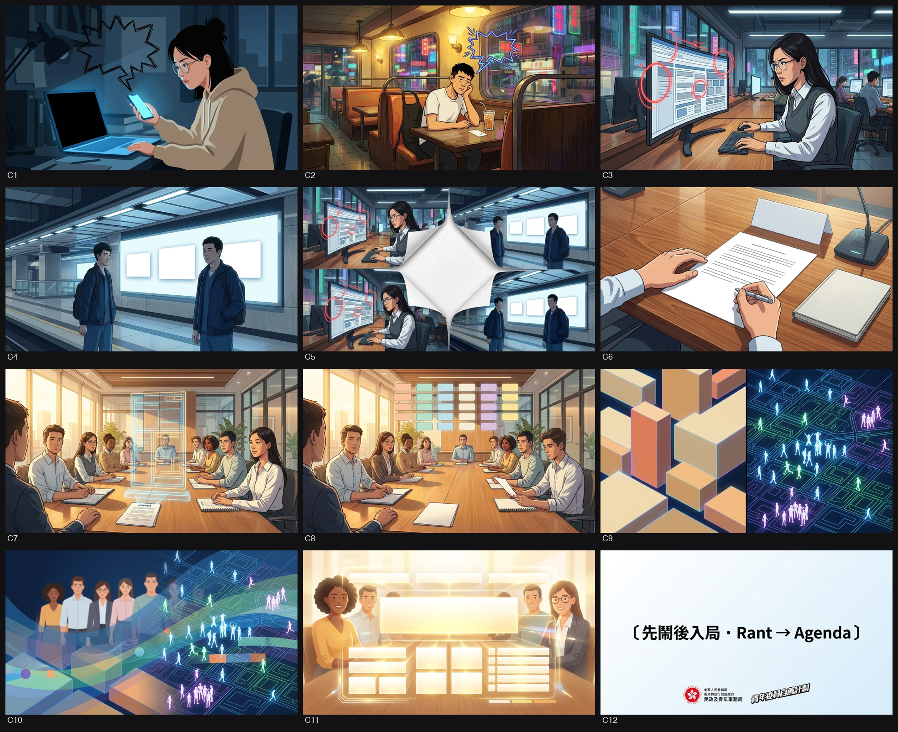
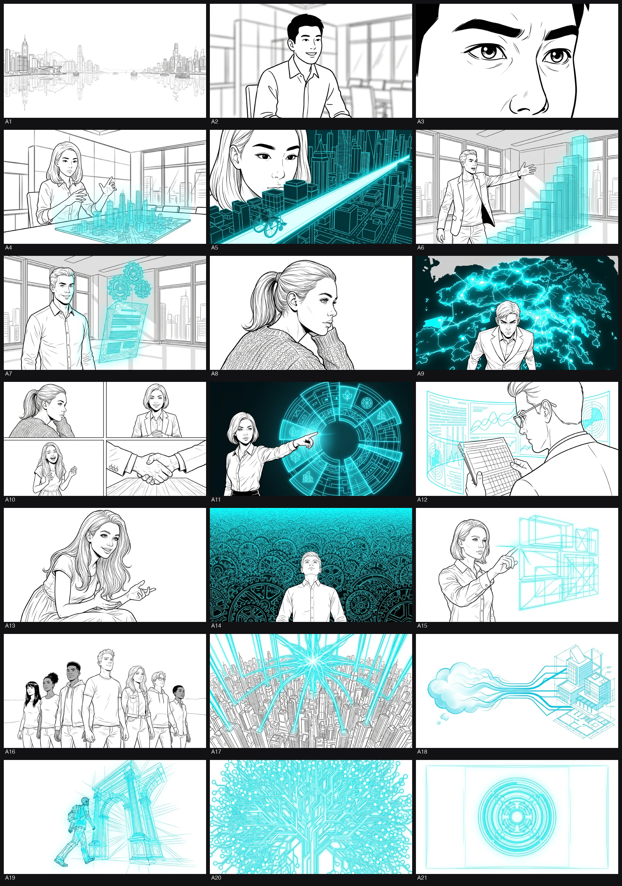
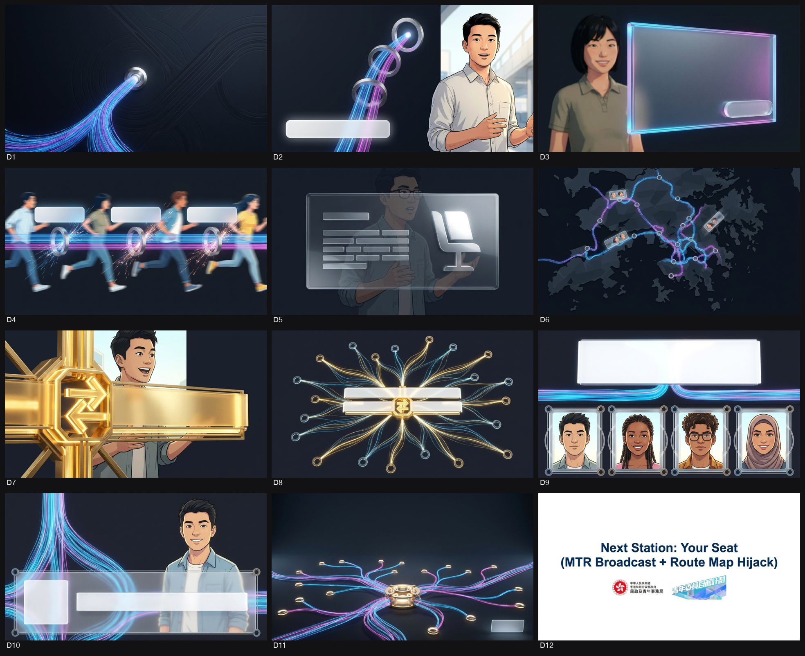
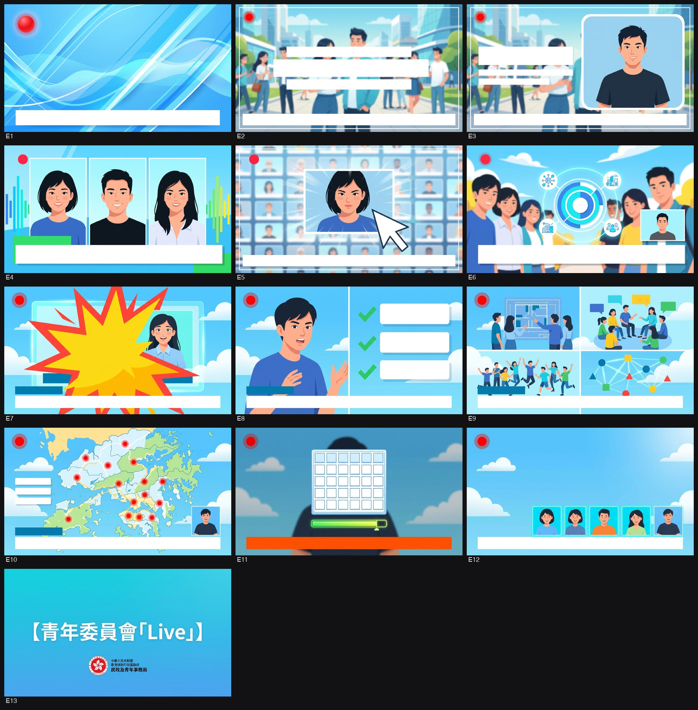

搵到嘅 LOGO／海報／單張／宣傳片／真實參考相，每個有原網址 · 📁 GDrive 存檔 folder。剔相後揀：⭐首選＝呢張參考優先過其他；🔁重搜＝搵過好啲（e.g. logo 污糟）；🗑刪除＝搵錯即清。
委員會／agency 諗橋一定收呢批做底，必跟。
民政及青年事務局（HYAB）與政府新聞處（ISD）合作，招標承辦「青年委員自薦計劃」第10期（MSSY Phase 10）的宣傳製作及市場推廣服務 [cite: 333, 334]。
本計劃的政策背景源於《行政長官2022年施政報告》及《青年發展藍圖》中的「青年參與倡議」 [cite: 336]。政府的硬性指標（KPI）是將參與自薦計劃的諮詢委員會數目，由2022年的約60個大幅增至現屆政府任期內不少於180個，以發揮「青年人才庫」的功能 [cite: 336, 467]。第10期計劃預計於 2026年8月底或9月初 正式推出 [cite: 337, 467]。本期的重要政策變革在於民政事務總署將開放18區「地區青年社區建設委員會」及「地區青年發展及公民教育委員會」的席位接受青年自薦 [cite: 337, 467]。
本項目的招標目的，是委託專業廣告代理商提供一站式市場推廣服務，包括宣傳品設計及印刷、社交媒體圖文製作、網絡廣告投放，以及透過改編現有素材（「零拍攝」限制）製作電視宣傳片、全新的電台宣傳聲帶，以及兩支2分鐘的推廣影片 [cite: 334, 335, 336]。
---
宣傳活動的目標受眾為香港一般大眾，特別是年滿 16 至 35 歲的青年人 [cite: 336]。在具體資格分層上，投標者必須在傳意時精確區分：
* 16至35歲：符合資格自薦加入18區的「地區青年社區建設委員會」及「地區青年發展及公民教育委員會」 [cite: 337, 338]。
* 18至35歲：符合資格自薦加入指定的「政府諮詢及法定組織」（政策範疇涵蓋創科、商貿、環境、教育、基金委員會及上訴小組等） [cite: 337, 338]。
---
宣傳內容必須向公眾及青年人準確傳遞以下核心訊息（標書第80至81頁） [cite: 327, 338, 339]：
1. 政策彰顯：展現「青年委員自薦計劃」作為「青年參與倡議」的核心部分，是《2022年施政報告》及《青年發展藍圖》的重點青年發展舉措 [cite: 338, 339]。
2. 定位青年：強調青年人是推動社會和經濟長遠發展的引擎 [cite: 339]。
3. 實質貢獻：彰顯青年加入政府諮詢委員會，能夠在不同政策領域上發表意見，為香港發展作出實質貢獻 [cite: 339]。
4. 呼籲行動：鼓勵有志服務社群的青年人把握政府提供的機會，踴躍自薦加入上述兩類地區委員會及指定的諮詢委員會 [cite: 337, 339]。
5. 基礎資訊落地：清晰提供第10期招募的實用資訊，包括參與委員會的名單、關鍵日期、申請資格、職權範圍及查詢方法 [cite: 340]。
---
招標文件對各項影音交付物的技術規格、集數、長度、語言及字幕有極為嚴格的硬性規範 [cite: 351, 355, 356]：
* TV API（電視宣傳短片）：
* 集數與長度：共 1 集，長度為 30 秒 [cite: 351]。
* 製作方式：舊片改編。合約商必須基於局方提供的第9期 TV API 乾淨母帶（Clean Master Copy in HD CAM）進行後期修改 [cite: 350, 351]。修改範圍包括：抹去/移去畫面上原有的「18-35歲/ aged 18-35」字眼 [cite: 350]；更新第10期參與委員會的類別字幕 [cite: 350]；重新製作截止日期的動態圖形動畫 [cite: 350]；以及進行全新錄音及混音 [cite: 350]。
* 語言及字幕：分為廣東話版（配以繁體中文書面語字幕，禁止使用口語）及英文版（配以英文字幕） [cite: 352]。
* 輸出格式：16:9（HD）XDCAM HD422 50Mbps MXF 電腦檔案格式（無 clapper 檔頭），以及 16:9（HD）HD CAM 錄影帶格式 [cite: 352, 383]。
* Radio API（電台宣傳聲帶）：
* 集數與長度：共 1 套（含三種語言），長度為 30 秒 [cite: 355]。
* 製作方式：全新錄製 [cite: 334]。
* 語言及配音要求：分為粵語、英語、普通話三種版本 [cite: 355]。其中，英文版必須為單人獨白形式（Monologue-type），且必須聘用以美式英語或英式英語為母語的配音員 [cite: 364]；普通話配音員則建議在「國家語言文字工作委員會普通話水平測試」中獲得一級乙等（Grade 1B）或以上成績 [cite: 364, 393]。
* 輸出格式：RTHK 頻道需交 48 kHz/16 bit/雙聲道立體聲 WAV 檔 [cite: 389, 390]；商業電台需交 44.1 kHz/16 bit/立體聲 MP3 檔 [cite: 391]；新城電台需交 44.1 kHz/320Kbps/立體聲 MP3 檔 [cite: 392]。
* Promotion Video（推廣影片）：
* 集數與長度：共 2 條，長度各為 2 分鐘 [cite: 355, 356]。
* 製作方式：舊片改編與「零拍攝（Zero Filming）」。合約商必須直接使用局方提供的第8期及第9期委員分享影片進行重新剪輯 [cite: 336, 355, 356]。標書硬性限制「絕對不涉及任何實際拍攝工作」，合約商必須純粹透過剪接、重新配音、音效設計，以及創建符合本期視覺主題的 2D/3D 動態圖形（Motion Graphics）與動畫特效來升級舊素材 [cite: 336, 356, 357]。
* 語言及字幕：Cantonese 廣東話旁白，但必須輸出兩個版本：(1) 廣東話配繁體中文書面語字幕及蓋字；(2) 廣東話配英文字幕及蓋字 [cite: 356]。
* 輸出格式：16:9（HD）XDCAM HD422 50Mbps MXF，以及 MPEG-4 和 WMV 電腦檔案格式 [cite: 356]。
---
根據標書（第77、105-106頁），投標技術建議書中必須提交詳細的項目團隊結構與人力資源配置 [cite: 288, 296, 400]：
1. 核心團隊資歷：必須提交完整的擬定製作團隊名單，包括導演（Director）、美術指導（Art Director）及中英文撰稿員（Copywriters）的專業個人履歷與作品集 [cite: 296]。其中，中文及英文撰稿員必須分別為中文及英文母語使用者（Native writers） [cite: 296]。
2. 落場參與限制：所有於技術建議書中列出的班底成員，必須實質落場參與本項目的實際製作 [cite: 299, 300]。若因不可抗力原因必須更換人員，擬替換的人選必須具備同等或更高級別的專業資格及經驗，且必須取得 HYAB 的最終書面批准；若未能提供局方滿意的替換人選，局方保留在項目任何階段無條件終止合約且不作任何賠償的權利 [cite: 300]。
3. KOL / 明星 / 吉祥物等特殊角色要求：
* ERB 導師 / 官方吉祥物：標書全文沒有提及任何「ERB 導師」或「官方吉祥物」的要求 [cite: 460]。局方現時亦無專屬宣傳吉祥物 [cite: 460]。
* 名人 / KOL / 官員：標書並未強制要求使用明星或 KOL 參與演出，但明確指出歡迎任何有助傳遞核心訊息的創意提案，並表明民政及青年事務局官員（如局長、副局長）可能會親自出鏡參與 API 錄音或拍攝演出 [cite: 340, 460, 465]。
* 保險強制要求：若創意提案中涉及任何出鏡演員，合約商必須自費為所有參與 API 製作的劇組人員、器材、公眾及出鏡演出的演員（包括任何名人/官員）購買保額不少於 港幣 1,000 萬元（HK$10,000,000） 的公眾責任及意外保險 [cite: 438]。
---
1. 情感共鳴與活力調性：局方要求設計風格必須擺脫陳腔濫調，呈現出「情感共鳴（Emotionally engaging）、具啟發性（Inspiring）、年輕與活力（Young and energetic）、創意與趣味（Creative and interesting）」的調性 [cite: 340]。
2. 高重複使用策略（Reusability）：由於自薦計劃是政府的常規政策活動，標書在策略上明確要求「APIs 的框架設計必須便於日後重複使用（Re-usable）」 [cite: 341, 468]。投標方案必須採取模組化設計，確保將來期數在更換參與委員會、截止日期或報名網址等文字資訊時，只需進行極少量的後期修改即可直接出街 [cite: 341, 468]。
3. 性別主流化（Gender Mainstreaming）審查：合約商必須嚴格審查所有提交的設計與影像作品，確保絕對沒有任何性別偏見或性別不平等的刻板印象，且宣傳內容必須以具備性別敏感度（Gender-sensitive）的方式呈現（標書第65、113頁） [cite: 272, 436, 438]。
4. 無障礙及資訊可達性：為配合地鐵車廂無聲播放及手機滑屏等情境，影片必須具備極高可讀性的畫面蓋字（Supers），並以聲音與畫面同步的方式呈現網址、查詢熱線等核心 Call-to-Action 資訊 [cite: 348, 353, 356]。
---
政府標書審查極度嚴苛，任何一項不符都將導致投標即時被判定為無效/ disqualified [cite: 285]：
1. Offer to be Bound（Part 8）必須簽署並裝入技術封套：Part 8 報價書（第118頁）必須完整填寫、由公司授權人親筆簽署及蓋上公司印章，並於投標截止前隨技術封套遞交 [cite: 52, 54, 113, 288]。若漏簽、漏交或將此表格放入了價格封套，投標將直接判定為無效 [cite: 54, 86, 87]。
2. 嚴格執行「雙封套遞交系統（Two-Envelope System）」：
* 價格封套：內裏只能且必須包含 Part 6 Price Schedule（第115-116頁） 的原件及兩份副本 [cite: 52, 294]。封套外必須清晰註明 Quotation Ref、項目主題、截止日期及「Price Proposal」字樣，且封套表面絕對不能出現投標公司的名稱或任何識別標誌 [cite: 52, 289, 294]。
* 技術封套：內裏包含 Technical Proposal（含中文 Storyboards [cite: 53]、Director's showreel DVD [cite: 53]）、Annex A 公司資料 [cite: 52, 288]、Part 7 創新與 ESG 提案表 [cite: 52, 287]、已簽署之 Part 8 [cite: 52, 288] 以及商業登記證等 [cite: 323]。外殼清晰註明「Technical Proposal」，且同樣絕對不能有任何標示投標公司名稱的字眼 [cite: 52, 289, 298]。
* 大外封套：將上述兩個獨立密封的無名內封套放入同一個大信封內，貼上官方提供的 Quotation Label，遞交至投標箱 [cite: 10, 11, 51, 289]。
3. 提案與報價的一致性（Triplicate）：所有遞交的技術建議書、價格書等文件，必須一式三份（一套正本，兩套identical複印本） [cite: 50, 52, 288, 294]。若正本與副本之間出現內容不一致，政府有權直接拒絕投標 [cite: 290, 292]。
4. 2分鐘推廣影片「零拍攝（Zero Filming）」硬紅線：這是最容易忽視的技術紅線 [cite: 468]。兩支2分鐘影片（Item VI）絕對不能包含任何全新的實地拍攝、新演員外景或補拍鏡頭 [cite: 336, 356]。所有畫面必須純粹基於舊有的 Phase 8 & 9 素材進行二次改編 [cite: 336, 356]。
5. 電視短片（TV API）必須基於 Phase 9 母帶改編：30秒 TV API 必須以局方提供的第9期乾淨母帶為改編底本 [cite: 334, 350, 351]，嚴禁自行重新拍攝全新框架的 TV API。
6. 中文字幕必須採用「書面語」：所有影音交付物（TV API、2分鐘影片）的中文繁體字幕與畫面蓋字，必須嚴格使用繁體中文書面語（Written Traditional Chinese），絕不容許出現任何廣東話口語或不規範的網絡簡體字 [cite: 352, 356, 362]。
7. 發音精準度與無償重錄罰則：所有電台 APIs（廣東話、英語、普通話）送抵電台後，將由公務員事務局法定語文事務部（OLD of CSB）進行發音與語音審查 [cite: 360]。若因任何發音不標準、懶音或語調欠妥而被電台或官方法定語文部拒收，合約商必須在不向政府加收任何費用的情況下，無條件立即重新安排錄音、混音並重新配送電台進行更換 [cite: 360]。
8. 第三者知識產權與音樂版權清算（Copyright Clearance）：
* 原創與授權保證：合約商必須保證所有提交的 Deliverables 均為原創 [cite: 187, 261]，且使用任何第三者Licensed Property（如背景配樂、版權音效、插畫素材等）時，必須自費完成全球、永久、無條件且不可撤銷的版權清算 [cite: 257, 260, 261]。
* 音樂版權專屬罰則：若使用了收費庫音樂或受 CASH、IFPI、HKRIA 等版權協會保護的音樂 [cite: 257, 264]，合約商必須在申請合約款項時，附上完整填寫的《Information on Music Copyright》表格（Annex VI） [cite: 253, 332, 365]，否則政府有權無限期拒絕支付合約款項 [cite: 253, 365]。
9. 創新方案（Pro-innovation & ESG）考核：技術評審總分100分中，有高達 20%（20分） 是專門評估投標者提出的「Pro-innovation proposals（15分）」與「ESG Proposals（5分）」 [cite: 402, 415]。中標者一旦在 PART 7 中承諾了這些方案 [cite: 424, 443]，這些方案將直接寫入合約條款，若日後實際執行時未能履行，將被直接判定為合約違約，政府有權索償甚至立即終止合約 [cite: 429]。
10. 國家安全與公共利益紅線：政府保留絕對權利，若發現或有合理理由相信投標者曾參與、正參與或可能參與任何危害國家安全的活動 [cite: 105, 317]，或對公共利益、公共安全、公共道德帶來潛在負面影響 [cite: 105, 317]，將會被立即取消投標或中標合約資格 [cite: 105, 171, 317]。
---
📊 下一步建議：為了讓您的投標建議書在 Stage 3 技術評估（佔比高達 70%）中穩奪最高評級 [cite: 301, 399]，我可以根據標書第108-111頁的評分標準 [cite: 332]，為您撰寫符合 15 分滿分要求的「4項具體、可量化且100%可落地的 Pro-innovation（技術/工作流程創新）建議方案」 [cite: 417, 421]，以及 5 分滿分所需的「4項 ESG 綠色環保與社會責任方案」 [cite: 419, 422]，助您大幅提升 combined score [cite: 431]。
fetch_source（pypdf）抽嘅標書逐字原文 —— 委員會／agency／debrief／5W1H 都餵呢份做 ground-truth。 · 📄 開原始檔 ↗
===== 7.1_Part 5_Service Specifications - Project Brief_HYABQS0442026_HYAB QS 044 2026.pdf(Specification 原件)===== [p1] Quotation Ref.:HYAB/QS/044/2026 Page 78 of 118 PART 5 SERVICE SPECIFICATIONS Table of Content Sheet 1. Purpose ....................................................................................................................................... 79 2. Target Audiences ....................................................................................................................... 79 3. Background ................................................................................................................................ 80 4. Key Messages ............................................................................................................................. 80 5. Creative Approach..................................................................................................................... 81 6. Completion Date ........................................................................................................................ 82 7. Deliverables ................................................................................................................................ 82 I. Design and Production of Social Media Posts ............................................................................. 82 II. Artwork Designs and Printing ..................................................................................................... 82 III. Placement of Internet Advertisements ......................................................................................... 83 IV. TV API ...................................................................................................................................... 84 V. Radio API .................................................................................................................................. 85 VI. Promotion Video ........................................................................................................................ 86 8. Services Required ...................................................................................................................... 87 9. Supervision ................................................................................................................................. 88 10. Payment ...................................................................................................................................... 88 11. Other Requirements .................................................................................................................. 89 12. Working Schedule ...................................................................................................................... 90 Annex I – Technical Requirements for Finished Materials ................................................................. 91 Annex II – Specifications of Artwork Design and Printing for Publicity Materials............................ 95 Annex III – Specifications of TV and Radio API ................................................................................ 97 Annex IV – Script of the TV and radio API for MSSY Phase 9 ....................................................... 101 Annex V – Marking Scheme and Assessment Criteria for Proposals ............................................... 104 Annex VI – Information on Music Copyright ................................................................................... 112 Annex VII – Statement on Copyright, Confidentiality, Indemnity, Insurance and Gender Mainstreaming for Bidding Agencies .............................................................................................. 113 [p2] Quotation Ref.:HYAB/QS/044/2026 Page 79 of 118 Project Brief Quotation Exercise for the Production of TV and Radio Announcements in the Public Interest (“APIs”) and Provision of Marketing Services for the Member Self-recommendation Scheme for Youth (“MSSY”) Phase 10 1. Purpose For the launching of MSSY Phase 10, the Home and Youth Affairs Bureau (“HYAB”) intends to engage a Contractor for the provision of marketing services, including the design and production of publicity materials and the placement of internet advertisements. HYAB will also engage the Contractor to produce one set each of TV API by adapting the existing one and a new radio API , as well as two promotional videos adapted from existing materials. The scope of work expected f rom the Contractor is explained in this Project Brief. In gist, agencies are invited to: (a) Create and produce artwork designs for the related publicity materials, including the printing and delivery of posters; (b) Create and produce graphic designs of social media posts with info -packs (懶人 包) for promoting MSSY Phase 10; (c) Placement of Internet advertisements (the media cost which will be reimbursed based on its actual expenditures should be excluded from the rates for the provision of services). (d) Produce one 30-second TV API by adapting the existing 30-second TV API ; (e) Produce a new corresponding 30-second radio API; and (f) Produce two 2-minute promotional videos for MSSY Phase 10 by adapting the existing two promotion al videos. The scope involves creating or amending animations/graphics to align with the artwork theme , with zero filming work required. 2. Target Audiences The general public of Hong Kong, especially young people aged between 16 and 35. [p3] Quotation Ref.:HYAB/QS/044/2026 Page 80 of 118 3. Background MSSY Phase 10 MSSY is one of the key initiatives of youth development as set out in the Chief Executive’s 2022 Policy Address (“PA”) and the Youth Development Blueprint. With the launch of the “Youth Participation Initiative” to engage more young people in public affairs and enhance their interaction and trust with the Government, action is in hand to expand the MSSY , with a view to tripling the number of participating advisory committees from around 60 in 2022 to no less than 180 within the current term of the Government to enhance t heir functions as talent incubators. Another measure under the “Youth Participation Initiative” is for the Home Affairs Department to open up certain seats of the District Youth Community Building Committee and District Youth Development and Civic Education Committee set up in 18 districts for young people to nominate themselves as members. Young people are encouraged to offer their views on matters such as district works projects, youth development and civic education. MSSY Phase 10 will be launched in End August or Early September 2026. Young people with a commitment to serving the community are invited to apply for MSSY Phase 10 to become members of the District Youth Community Building Committee, District Youth Development and Civic Education Committee and specified government advisory committees which cover a wide spectrum of policy areas including innovation and technology, health , education, environment, culture, fund committee, appeal panel etc. To be eligible for appointment, applicants must meet the specified age criteria on the date of the application deadline. Specifically, young people aged between 16 and 35 are eligible to apply for District Youth Community Building Committee and District Youth Development and Civic Education Committee . Meanwhile, young people must be aged between 18 and 35 to apply for specified government advisory committees under the MSSY . 4. Key Messages (a) To demonstrate – (i) MSSY, part of the “Youth Participation Initiative”, is one of the key initiatives of youth development as promulgated in the 2022 PA and Youth Development Blueprint; (ii) young people are the engine that drives the long -term development of society and the economy;
每個概念必跟，違 = 廢稿。
1. 🏷️ 「門常開」全新特區政府宣傳標誌
- 事實：特區政府於2024年推出全新宣傳標誌，沿用政府總部「門常開」建築為主體，帶出政府秉持開明、開放的態度。（出處：[hooks-research] HYAB）
- 💡 可以點做橋：可以將「門常開」圖案動態化為一扇能讓青年實體推開並步入會議廳的「機會之門」。
2. 💡 首次向16歲初熟青年敞開的大門
- 事實：今期自薦計劃首次將18區地區青年委員會的資格下調至16歲，且電視片必須抹去「18-35歲」字眼。（出處：7.1_Part 5_Service Specifications - Project Brief (第80頁/Section 3 & 第84頁/Section IV)）
- 💡 可以點做橋：可以用「未有選票、但有席位」的16歲中學生日常生活場景，對比實體議事廳席位來做視覺反差。
3. 💡 諮詢委員席位「三倍速」幾何增長
- 事實：施政報告目標是將參與自薦計劃的委員會數目，由2022年的約60個大幅增至不少於180個，增幅達三倍。（出處：7.1_Part 5_Service Specifications - Project Brief (第80頁/Section 3)）
- 💡 可以點做橋：可以用電腦圖像將「180」這個數字化為滿屏立體增殖的諮詢椅子，視覺化席位激增的震撼。
4. 🏷️ 推廣影片的「零拍攝 (Zero Filming)」限制
- 事實：標書明文限制兩支2分鐘推廣影片不能進行任何實際拍攝，必須完全重新改編及剪輯第8及9期的委員分享影片。（出處：7.1_Part 5_Service Specifications - Project Brief (第79頁/Section 1 & 第86頁/Section VI)）
- 💡 可以點做橋：可以用動態幾何圖案與故障藝術（Glitch Art）拼貼，將舊委員片段重構為科技感十足的幾何舞台。
5. 🏷️ 英文電台宣傳片「單人獨白 (Monologue)」限制
- 事實：招標書硬性規定，全新的英文電台宣傳聲帶（Radio API）必須採用單人獨白形式（Monologue-type）呈現。（出處：7.1_Part 5_Service Specifications - Project Brief (第88頁/Section 8)）
- 💡 可以點做橋：可以將獨白包裝為青年深夜在房內對著錄音設備、低沉傾訴「想改變社區」的真實自我審視。
6. 👤 歡迎政府官員親自出鏡與青年同台
- 事實：標書指出歡迎任何能傳遞核心訊息的創意想法，並特別提及民青局官員可能會親自出鏡參與錄音或拍攝演出。（出處：7.1_Part 5_Service Specifications - Project Brief (第81頁/Section 5)）
- 💡 可以點做橋：可以打破官方常規，設計青年與局長在會議桌上「平起平坐、互相拋接靈感點子」的Battle動態畫面。
7. 💡 青年普遍存在的「聲音無法影響政府」無力感
- 事實：調查顯示高達六成半（66.8%）的香港青年認為個人沒有足夠力量影響政府決定，社會參與有無力感。（出處：[hooks-research] HYAB (Background research Section ④)）
- 💡 可以點做橋：可以用第一人稱質問「你哋係咪聽真話？」的直白鏡頭開場，隨即用實質落地成果直接擊破青年的質疑。
8. 🇭🇰 「十八區打卡熱點」與日常地區工程的實質決定權
- 事實：自薦加入「地區青年社區建設委員會」的青年，能親自參與並籌劃「十八區打卡熱點」等實質改善地區環境的地區工程項目。（出處：[briefing-transcript] HYAB (第8期委員經驗分享)）
- 💡 可以點做橋：可以將18區的日常街角與青年的螢光筆藍圖重疊，強調「自薦就能左右社區工程」的實質權力感。
冇額外補充
好的，這是一份整合後的乾淨研究報告，去除了重複資訊，保留了所有獨有事實，並按照要求分段、點列呈現：
---
* 政策目標與願景：
* 「青年委員自薦計劃」（MSSY）是香港政府為落實行政長官2022年《施政報告》及《青年發展藍圖》中「青年參與倡議計劃」的重點措施。
* 政府目標是在本屆任期內，將參與「青年委員自薦計劃」的諮詢委員會數目，從2022年的60多個增加三倍至不少於180個，以發揮「青年人才庫」的作用。
* 政府願景是培育青年成為愛國愛港、具備世界視野、有抱負和具正向思維的新一代，並鼓勵他們貢獻香港、國家以至世界。
* 《青年發展藍圖》：
* 行政長官在《施政報告》及競選政綱中提出制訂首份《青年發展藍圖》。
* 《青年發展藍圖》於2022年12月20日公布，首階段提出超過160項支持青年發展的具體行動及措施。
* 自2022年12月公布以來，民政及青年事務局（民青局）和各決策局一直積極落實《藍圖》中超過160項具體行動和2023及2024年提出的超過90項措施，截至2026年2月底，超過120項措施已完成，其餘措施亦進度理想。
* 國家主席習近平重要講話： 國家主席習近平在慶祝香港回歸祖國25周年大會暨香港特別行政區第六屆政府就職典禮上強調「青年強，則國家強」、「青年興，則香港興」、「青年發展，則香港發展」、「青年有未來，則香港有未來」。這為香港特區政府的青年發展工作定下了重要方針。
* 「由治及興」新階段： 隨著《香港國安法》的成功實施和選舉制度的完善，香港正進入「由治及興」的新階段。在此背景下，政府希望透過青年發展工作，凝聚青年力量，為香港的未來發展作出貢獻。
* 回應青年挑戰： 政府希望透過政策措施，協助青年解決學業、就業、創業、置業等問題，創造上流機會。
* 民政及青年事務局 (HYAB) 成立日期： 2022年7月1日。
* 青年參與比例提升： 政府諮詢及法定組織內青年成員的比例已由2017年底的7.8%增至2024年底的15.5%。
* 第10期MSSY重點： 民政事務總署將開放18區「地區青年社區建設委員會」和「地區青年發展及公民教育委員會」的席位供青年自薦參與。
* 青年節活動： 青年節是《青年發展藍圖》的重點項目之一，過去三屆參與人數持續增長，去年有超過200項活動，吸引超過25萬人次參與。
* 第九期自薦計劃反應： 由試行計劃至第八期自薦計劃，合共收到約14,000份申請，顯示此類宣傳能有效吸引青年報名。
* 青年人口數據： 2021年第一季，本港15至24歲青年人口為602,700人。
* 青年貧窮率： 2021年第一季，生活在貧窮線以下的青年人數為145,700人，青年貧窮率為24.1%，創多年新高。
* 青年失業率： 2025年5至7月，15至24歲青年失業率高達11.9%，其中15至19歲青年失業率更高達15.1%，創近三年新高。
* 非華語青年： 2021年，全港約有118,000名少數族裔青年，佔總青年人口約5%，當中近40%為南亞裔人士。
* 專上教育參與率： 2021/22學年，適齡學生專上教育（包括學士學位和副學位）參與率超過八成，較2001/02學年不足四成大幅上升。
* 結婚和生育意願： 香港青年協會2025年5月20日發布的調查顯示，香港青年結婚和生育意願最低，近四成半（44.9%）受訪香港青年傾向不結婚，有意生育的比率為36.5%。
* 民政及青年事務局局長： 麥美娟女士, SBS, JP。
* 民政及青年事務局副局長： 梁宏正先生。
* 民政及青年事務局常任秘書長： 李百全先生 (自2026年1月19日)。
* 青年專員： 懸空 (政府會把民青局專責青年事務的副秘書長改設為「青年專員」)。
* 青年發展委員會 (YDC)： 由政務司司長擔任主席，負責加強政府內部的政策統籌工作，並為民青局的工作提供支援。
* 現任主席：政務司司長。
* 副主席：梁毓偉先生。
* 其他相關政策局/部門： 教育局、勞工及福利局、房屋局等。
* 青年對參與的渴望與無力感：
* 有研究顯示，超過六成半（66.8%）香港青年認為「個人沒有足夠力量影響政府決定」。
* 42.3%青年認為「青年聲音未獲聆聽」是主要社會問題，反映青年對參與權的渴望。
* 儘管青年委員自薦計劃擴大了青年參與，但有評論指出青年在這些平台中主要扮演「被諮詢」角色，而非「共同決策者」。
* 社會參與度：
* 2024年3月5日發布的研究顯示，9成青年願為香港付出，主要形式是「做好自己」和「社區發展」。
* 然而，香港青年協會2025年2月17日發布的調查顯示，青年的社會參與度減弱，對國家和全球事務的關注度下降。
* 「三業三政」： 青年人普遍關注學業、事業、置業，以及議政、論政、參政的機會。
* 向上流動機會： 青年人普遍認為個人就業發展空間有限，對未來缺乏信心，看不到改善生活的機會。
* 居住問題： 青年人對置業難、青年宿舍宿位不足等問題表示關注。
* 精神健康： 逾三成青年表示在困難時沒有人可以幫助，反映精神健康需要關注。 香港青年協會2025年公布的調查發現，受訪青年的社交媒體使用量與焦慮程度呈顯著正相關。
* 國民身份認同： 部分青年對國民身份認同較低。
* 大灣區發展： 雖然政府積極推動青年融入國家發展大局，但有82%青年表示沒有興趣在大灣區內地城市工作。
* 「躺平」現象： 部分青年因對現實環境失望而採取「躺平」態度，認為看不到人生的未來而感到氣餒。
* 教育與生涯規劃： 青年關注優質多元教育、生涯規劃、職業專才教育等。
* 近期同類宣傳掃描 (香港政府 + 相關機構)：
* 第九期「青年委員自薦計劃」電視宣傳短片 (2025年12月)：
* 內容：短片以多位青年輪流發言的形式呈現，強調「我有新想法」、「從青年人的角度」、「一起討論更貼地」、「太前衞？我說是創新！」等訊息。旁白鼓勵18至35歲對公共事務有想法的青年把握機會，響應《青年發展藍圖》，自薦加入政府諮詢委員會。片中亦有展示不同政策範疇的委員會名稱。
* Approach / Tone：年輕、活力、鼓勵創新和發言。強調青年人的聲音和想法的重要性。
* 《青年發展藍圖》公布相關宣傳 (2022年12月)：
* 內容：政府公布《青年發展藍圖》時，透過新聞稿、記者會及專屬網站等方式進行宣傳，闡述藍圖的理念、目標和超過160項具體行動及措施，包括擴大「青年委員自薦計劃」和設立地區性質的委員會讓青年參與。
* Approach / Tone：宏觀、政策導向、強調政府對青年發展的重視和承諾。
* 青年發展委員會相關宣傳 (持續)：
* 內容：青年發展委員會定期舉行會議，討論青年關注議題，並透過新聞稿等方式公布會議內容及政策成效，例如培育青年正向思維的資助計劃、協助青年置業的措施等。
* Approach / Tone：嚴謹、務實、強調政策的實質成效。
* 競品 / 同類創意做法 (本地 + 國際參考)：
* 香港政府其他招募/參與類宣傳：
* 紀律部隊招募廣告：通常強調紀律、使命感、團隊精神、專業形象及服務社會的機會。多以真實情境、訓練片段或成功案例來吸引年輕人投考。
* 義工服務宣傳：多以感性訴求為主，強調助人為樂、貢獻社會的滿足感，透過真實義工故事或溫馨畫面來打動人心。
* 「共築・創業家」計劃 (房屋局)：透過提供免租金商舖及階梯式租金優惠，鼓勵青年創業，並藉此為社區注入活力。宣傳重點在於「機會」和「實踐夢想」。
* 國際青年參與公共事務宣傳 (一般觀察)：
* 強調影響力與改變：許多國際案例會直接訴求青年對社會的影響力，例如「你的聲音可以改變世界」、「成為變革的推動者」。
* 多元參與形式：不限於傳統的委員會參與，也會推廣線上平台、公民提案、青年議會等更具彈性的參與方式。
* 故事性與個人成長：透過參與者的個人故事，展現他們在參與過程中如何成長、學習和實現自我價值。
* 視覺風格：傾向使用更具現代感、動態、多元化的視覺元素，避免過於官方或刻板的形象。
* 已經做到濫的 approach / trope (要避開)：
* 「青年是未來棟樑」的口號式宣傳。
* 過於官方、嚴肅的語氣和視覺。
* 單純羅列政策資訊。
* 「成功人士」的單一形象。
* 過於強調「愛國愛港」的直接訴求。
* 重複使用舊有素材而無新意。
* 「一國兩制」下的獨特優勢： 香港憑藉「一國」之本，背靠祖國，青年可獲推薦赴聯合國及國際組織任職，承擔國家國際義務，服務國家涉外建設。
* 國際舞台的參與者： 香港青年有機會以中國人員身份參與聯合國初級專業人員 (JPO) 方案，在國際舞台上發揮所長，擔任國家和世界的橋樑，說好香港故事。
* 國際教育樞紐。
---
以下對照表以香港政府及相關「青年委員自薦計劃」官方資料為基礎整理，方便你哋寫稿、做字幕同版面時用字統一。
---
1. 民政及青年事務局
- 英文：Home and Youth Affairs Bureau\[1\]\[4\]
- 簡稱：民青局（英文縮寫：HYAB）\[1\]
- 官方網站：`www.hyab.gov.hk`\[1\]
2. （標書中提到的「局方」均指上述 Home and Youth Affairs Bureau, HKSAR Government）
---
1. 青年委員自薦計劃
- 英文：Member Self‑recommendation Scheme for Youth
- 常用縮寫：MSSY
- 分期寫法：Member Self‑recommendation Scheme for Youth (Phase 9) / MSSY Phase 9
- 備註：過往官方宣傳如 LinkedIn 亦用 MSSY + Phase 表達各期\[7\]
2. 第九屆 / 第九期青年委員自薦計劃
- 建議統一：
- 中文：「青年委員自薦計劃」第九期（或「第九屆青年委員自薦計劃」視標書原文）
- 英文：Member Self‑recommendation Scheme for Youth (Phase 9)
3. 《2022年施政報告》
- 英文：The 2022 Policy Address
- 中文官方寫法：《2022年施政報告》（前面一般加「行政長官在立法會的2022年施政報告」）
4. 《青年發展藍圖》
- 英文：Youth Development Blueprint
- 中文官方寫法：《青年發展藍圖》（首字母大寫，屬政策文件名稱）
5. 青年參與倡議
- 英文：政府文件常用 Initiatives to promote youth participation 或置於 Youth Development Blueprint 的 chapter title 中。
- 影片文案如需英文，可用：Youth Participation Initiatives（屬慣用譯法，保持首字母大寫以示政策分類標題）。
6. 政府諮詢及法定組織
- 英文：Government advisory and statutory bodies
- 其中：
- 諮詢委員會：Advisory Committee / Advisory Council / Advisory Board（視個別正式名稱）
- 法定機構 / 法定組織：Statutory body / Statutory organisation
7. 性別主流化
- 英文：Gender mainstreaming
- 相關機構：
- 婦女事務委員會：Women’s Commission（屬政制及內地事務局轄下委員會）
8. 雙信封制
- 英文：Two‑Envelope System
- 中文官方叫法多用「雙信封投標制度」；投標文件可簡寫「雙信封制」。
9. Offer to be Bound
- 中文多寫：《Offer to be Bound》或「《承諾受約束書》」
- 由於標書原文件以英文為準，字幕建議：
- 中：《Offer to be Bound》表格
- 英：Offer to be Bound (Part 8)
10. 公眾責任保險 / 第三者責任保險
- 英文：Public liability insurance（香港政府標書慣用）
- 若特別指「第三者責任」可用 third‑party liability insurance，但以 public liability insurance 為主。
11. 性別主流化檢查清單
- 英文：Gender Mainstreaming Checklist
- 所屬：Women’s Commission 性別主流化工具。
12. 青年委員
- 英文常用：Young members / Youth members
- 此計劃語境下多用 young people appointed as members of government advisory and statutory bodies；影片可簡化為 young members of advisory committees。
---
1. 電視宣傳短片
- 英文官方慣用：TV Announcements in the Public Interest (TV APIs)
- 建議字幕：television API 或 TV API
- 「API」在香港政府用語中是 Announcement in the Public Interest 的縮寫。
2. 電台宣傳聲帶
- 英文：Radio Announcements in the Public Interest (Radio APIs)
- 可簡寫：radio API。
3. 宣傳短片
- 英文：Promotion Video 或 Promotional video
- 香港政府標書多用 promotion video 作交付品名稱。
4. 懶人包
- 英文：info‑packs / information packs
- 內文可用 easy‑to‑read info‑packs 作說明。
5. 媒體投放 / 網上廣告投放
- 英文：media placement / online ad placement
- 可配用：social media ad placement（FB/IG/LinkedIn）、YouTube ad placement。
6. 社交媒體帖文
- 英文：social media posts
- 例：Facebook / Instagram posts (Traditional Chinese), LinkedIn posts (English)。
7. Tagline（口號）
- 中文：宣傳口號 或 標語
- 英文：tagline（保持小寫）；書面可用 campaign tagline。
8. 改編（Phase 7 母片）
- 英文：adaptation based on the Phase 7 master TV API
- 「母片」：master version / master file。
9. 配音員 / 配音
- 配音員：voice‑over talents / voice‑over artists
- 配音：voice‑over recording
- 「廣東話版」：Cantonese version
- 「英文版」：English version
- 「普通話版」：Putonghua version / Mandarin version。
10. 字幕
- 中文字幕：Traditional Chinese subtitles
- 英文字幕：English subtitles
- 如需說明：Cantonese voice‑over with Traditional Chinese and English subtitles。
11. HDCAM / RED ONE / MXF (XDCAM HD422 50Mbps)
- 為格式名，保持原文：HDCAM, RED ONE, MXF (XDCAM HD422 50 Mbps)。
12. 海報橫額尺寸及物料
- 海報：posters
- 網上橫額 / Icon：online banners / icons
- A1 / A2 尺寸：A1 size / A2 size
- 128 gsm 啞膠紙：128 gsm matt art paper。
13. 技術評審 / 創新及 ESG 建議
- 技術評審：technical assessment
- Pro‑innovation 建議：pro‑innovation proposals
- ESG 建議：Environmental, Social and Governance (ESG) proposals。
14. Native English speakers / native American/British English
- 建議中文：
- 以英語為母語人士
- 操母語美式或英式英語的配音員。
15. 國家語委普通話水平測試「一級乙等」
- 英文慣用：Putonghua Proficiency Test (PSC) – Grade 1B or above。
16. CASH / IFPI / HKRIA
- 中文官方：
- 香港作曲家及作詞家協會（CASH） – Composers and Authors Society of Hong Kong Ltd. (CASH)
- 國際唱片業協會（IFPI） – International Federation of the Phonographic Industry (IFPI)
- 香港版權有限公司（HKRIA） – Hong Kong Recording Industry Alliance Limited (HKRIA)
- 用途：音樂及錄音版權授權機構。
17. 全球永久版權
- 英文：**global per
唔強制，諗橋時隨機抽嚟畀 agency 撞火花。
- Q1 如果呢個 message 只可以打動「最唔關心、最 cynical」嗰個觀眾 —— 要加咩一個 element(畫面/聲/人物/情境)先 3 秒內 hook 住佢、令佢唔 skip?
→ 加入高對比度（High-contrast）的青年面部極特寫（Extreme Close-up）配合環境低頻音效（Low-frequency drone）作為首 3 秒的 Hook。利用主觀視角（POV）鏡頭打破傳統宣傳片的旁觀感，以近乎詰問的靜默張力，直擊六成六青年對「建言無用」的無力感與質疑 [cite: 465, 468]。
- Q2 呢班受眾平時食開咩視聽語言(平台/節奏/語氣)?要 adapt 邊種佢熟悉嘅風格,先入到腦而唔似「政府嘢」?
→ Adapt 類似手機直屏（Vertical 9:16）的快速跳剪（Jump Cut）與高飽和度、大字體蓋字（Supers）的視覺節奏 [cite: 344]。配樂與聲音設計上 adapt 獨立電子樂（Lo-Fi / Synthwave）配搭非正式、第一人稱主觀視角（POV）的傾訴質感，徹底解構傳統政府官方片（APIs）的嚴肅語調 [cite: 340, 364]。
- Q3 成個 campaign 只准觀眾記住一個 element(一個畫面 / 一個 visual device / 一句)—— 你揀咩?點解係佢?
→ 選擇以「180 個委員會空椅」作為核心的視覺符號（Visual Device）[cite: 336]。利用電腦圖像（CG）將抽象的政策數據（三倍增長至不少於 180 個席位）實體化為滿屏繁衍、虛位以待的座椅空間，用強烈的視覺倍增震撼來代替枯燥的數字報告 [cite: 336]。
- Q4 客戶 key message 好抽象,要用咩具體 element(真場面/真數字/真人/真物)去「show 唔 tell」,令佢落地、唔流口號?
→ 加入真實地區建設的實體藍圖、18區打卡熱點的設計草圖，以及代表各政策範疇（如創科、環保）的專業物件特寫（Close-up）[cite: 337, 338, 447]。以青年雙手手持紅筆、在政總或地區會議室的規劃藍圖上實際圈劃、修改的動作，Show 出自薦委員擁有實質地區建設建言權的落地事實 [cite: 337, 447]。
- Q5 觀眾點解要信 / 關佢事?要加咩證據 element 或情感共鳴 element,先由「事不關己」變「同我有關」?
→ 加入「提案前」與「落成後」的對比畫面元素：一邊是青年開會時的草圖，另一邊是最終在 18 區街頭實體落成、有市民在其中互動的打卡點空鏡（Establishing shot）[cite: 337, 447]。藉此「意見被採納並實體落地」的硬證據，打破青年對「諮詢只是公事公辦」的固有心理防線 [cite: 448, 468]。
- Q6 呢條嘢實際喺邊度、咩狀態被睇到(電視 prime / 車廂無聲 / 手機 scroll / 戶外經過)?要 adapt 咩風格(有聲冇聲 / 首 3 秒 / 大字 / 節奏)先食到當下情境?
→ 針對地鐵車廂無聲屏幕及手機快速 Scrolling 的碎裂情境，必須 adapt「無聲亦能傳意」的動態大字體（Kinetic Typography）與幾何拼貼視覺流派 [cite: 348, 380]。首 3 秒必須使用強烈色彩對比（Color Block）或高頻率的畫面閃切（Flash Cut），在靜音狀態下強行中斷受眾的滑屏慣性。
- Q7 出街時間(事件前/中/後)decide 調子係「預告期待」定「總結成就」?要加咩 element 配合呢個時間感?
→ 調子定位於充滿逼迫感的「急切招募」與「限時召集」[cite: 343, 348]。在畫面中融入「數字倒數計時器（Countdown Timer）」的動態動效，並在電台及電視混音中加入時鐘滴答聲（Ticking clock SFX），以倒數的時間感激發青年「機會一閃即逝、立即自薦」的即時行動力 [cite: 339, 368]。
- Q8 同類(同部門/同題材)政府片嘅「安全做法」係咩?要 adapt / 升級邊種風格 element(質感/節奏/transition/配樂/美術流派),先做到「框內最高質」而唔悶?
→ 避開傳統「青年在草地上奔跑、排排坐微笑」的陳規套路 [cite: 468]。在「零拍攝」的硬性限制下，將舊有的委員訪問片段，adapt 混合媒介（Mixed Media）與波普藝術（Pop Art）拼貼風格，利用動態幾何圖案（Motion Graphics）與流體過場（Fluid Transition）重新活化舊素材，在安全框架內拉滿藝術感 [cite: 336, 356]。
- Q9 要加咩一個 unexpected element(反差/新 visual device/新手法),先同部門過往 campaign 拉開距離、唔似翻炒,但又唔踩紅線?
→ 引入「左右分割畫面（Split Screen）」的雙時空對位結構：左邊是青年在日常環境（如在電腦前編程、在街頭作畫）拋出點子，右邊是政策會議室中官員與圖表同步作出回應的動態 [cite: 337, 448]。這種「時空即時互聯」的視覺框架，既能強烈呈現雙向溝通，亦完全合乎性別主流化與公眾安全紅線 [cite: 272, 317]。
---
*用法:agency / 委員會落橋前先消化呢 9 條,順住 element + 風格方向諗,唔好離地。*
---
🎨 下一步建議：我可以根據標書第 70 頁的技術評分要求 [cite: 297, 298]，為您撰寫一份「兩款海報設計（Poster Designs）及社群貼文（Social Media Posts）的創意概念與文案排版草案」，配合上述的視覺風格方向進行實裝。
【呢條 brief 判定】目的:鼓勵參與/招募/比賽/報名 題材:國安國教, 人才就業
【同目的(鼓勵參與)ISD 慣性】主開頭 真人/講者(50%);格式率 旁白38% 熒幕蓋字100% 標誌結尾83% CTA77% 感嘆72% 三段式·0%;慣用結尾 香港戲院商會標誌, 衞生署標誌, 香港電影發展基金標誌, 衞生防護中心標誌
【對口 ISD 舊作借鏡(同 目的×題材,參考佢點寫,唔好照抄,要創新)】
— 國家安全教育2026 [鼓勵參與 | 國安國教]
▶ https://www.youtube.com/watch?v=Lq2nz9omN0U&list=PL1188A9802575C33F
旁白：每個人都希望生活在一個安定的社會 / 國家安全是社會繁榮穩定的重要基石 / 堅持和完善行政主導 / 統籌發展和安全 / 落實愛國者治港 / 構建和諧美好生活 / 國安才能港安 / 國安才能家安 / 維護國家安全人人有責 / 我們一起參與 / 熒幕蓋字：國安才能港安 / 國安才能家安 / nsed.gov.hk / 網頁二維碼
— 現屆香港特別行政區政府上任四周年工作 [鼓勵參與 | 盛事旅遊/人才就業]
▶ https://www.youtube.com/watch?v=ei76dlF_TyQ
旁白：本屆政府全力發展經濟、改善民生 / / 熒幕蓋字：經濟轉虧為盈 / 2026年首季增幅創五年新高 / / 旁白：積極開闢新賽道，推動盛事經濟 / 熒幕蓋字：啟德體育園 年度最佳場地 / 門票銷量亞洲第一 全球第三 / / 旁白：訪港旅客持續上升 / 熒幕蓋字：國際旅客量全球第二 / / 穆斯林友善旅遊目的地 全球第二 / / 旁白：致力優化住屋和交通等範疇，解決老大難問題 / 熒幕蓋字：公屋綜合輪候時間降至4.7年 / 制定簡樸房制度 / / 旁白： 完成《基本法》23條本地立法 / / 主動把握國家發展機遇 / / 行政長官率團出訪東盟、中東與中亞，開拓新市場 / 熒幕蓋字：中亞之行簽署合作協議和備忘錄數量 / 歷來最多 / / 旁白：招商引資 / 打造國際高端人才集聚高地和「留學香港」品牌 / 熒幕蓋字：世界人才排名亞洲之冠 全球第四 / / 全球唯一城市擁有五間百強大學 / / 旁白：今年，首位香港載荷專家參與神舟二十三號飛行任務 / / 黎家盈
— Hong Kong—Asia’s premier talent hub (2) [形象/成就(propaganda) | 人才就業]
▶ https://www.youtube.com/watch?v=nwC85MuHnBk&list=PL1188A9802575C33F
Tony Zhou：「高端人才通行證計劃」吸引我來香港發展 / 現在我的客戶遍布全球 / 熒幕蓋字：中國內地 / 周錫晨 / DayOne數據中心服務交付總監 / Tony Zhou：太太和兒子都一起來到香港生活 / 香港不僅讓我的事業快速躍升 / 還為我和家人提供一個安樂窩 / 旁白：香港作為亞洲第一的人才樞紐 / 致力吸納國際高端人才落戶 / 拓展事業、享受生活、成就卓越 / 促進本地經濟繁榮 / 熒幕蓋字：香港 / 拓展事業 · 樂享生活 · 成就卓越 / 熒幕蓋字：勞工及福利局標誌 / 香港人才服務辦公室標誌
— 香港—亞洲頂尖人才樞紐 (1) [形象/成就(propaganda) | 人才就業]
▶ https://www.youtube.com/watch?v=DqyOH7Y5F9c&list=PL1188A9802575C33F
Grégoire Michaud：香港為我提供成功所需的材料 / 熒幕蓋字：瑞士 / Grégoire Michaud / 企業家 / Bakehouse創辦人 / Grégoire Michaud：在香港創業，讓我接觸到來自全球的客人 / 機會就在這裏！ / 旁白：香港作為亞洲第一的人才樞紐 / 致力吸納國際高端人才落戶 / 拓展事業、享受生活、成就卓越 / 促進本地經濟繁榮 / 熒幕蓋字：香港 / 拓展事業 · 樂享生活 · 成就卓越 / 熒幕蓋字：勞工及福利局標誌 / 香港人才服務辦公室標誌
— Hong Kong, Asia's Event Capital (April 2026) [形象/成就(propaganda) | 盛事旅遊/人才就業]
▶ https://www.youtube.com/watch?v=6sh33bTFI24&list=PL1188A9802575C33F
旁白：政府繼續舉辦大型盛事 / 熒幕蓋字：2026年香港國際七人欖球賽 / 4月17至19日 / 熒幕蓋字：天馬凌雲──故宮博物院藏繪畫珍品 / 2026年3月20日至2027年3月17日 / 旁白：精彩的文化 / 熒幕蓋字：漢風泱泱：雄渾與交融的盛世 / 3月20日至9月20日 / 旁白：體育 / 熒幕蓋字：2026 UCI 世界盃場地單車賽(中國香港) / 4月17至19日 / 旁白：金融 / 熒幕蓋字：香港國際創科展 / 4月13至16日 / 旁白：貿易 / 旁白：和旅遊盛事陸續呈獻 / 熒幕蓋字：冠軍賽馬日 / 4月26日 / 旁白：歡迎大家和旅客一起參與 / 熒幕蓋字：CON-CON HONG KONG 2026 / 4月4至5日 / 旁白：樂在其中 / 熒幕蓋字：2026香港閱讀+ / 4月18日至26日 / 旁白：感受香港的多姿多彩 / 熒幕蓋字：香港時裝節 / 4月27至30日 / 旁白：獨特魅力和動感 / 熒幕蓋字：2026 五人冰球賽 / 4月23日至5月9日 / 熒幕蓋字：當下──香港藝術展 / 2026年3月20日至2027年
— 河套深港科技創新合作區 [形象/成就(propaganda) | 人才就業]
▶ https://www.youtube.com/watch?v=KPcWhgjyUCg&list=PL1188A9802575C33F
旁白： / 河套深港科技創新合作區是國家重要戰略平台 / 香港園區坐擁「一河兩岸、一區兩園」的獨特優勢 / 熒幕蓋字： / 香港 / 深圳 / 港深創科園 / 深圳科創園區 / 旁白： / 擔當國家開闢創新制度的試驗田 / 建設全速推進，首批三座大樓已投入營運 / 熒幕蓋字： / 濕實驗室大樓 / 人才公寓 / 旁白： / 全力實現人流、資金流、物流及數據流創新要素跨境便捷流動 / 熒幕蓋字： / 人流 / 資金流 / 物流 / 數據流 / 旁白： / 打造世界級創科樞紐、建設國家關鍵創新基地 / 熒幕蓋字： / 創新科技及工業局標誌 / 港深創科園標誌
════════════════════════════════════════════════════════════════════
【⭐ 歷年青年事務 ISD 官方逐字稿（真源：ISD 33 欄語料庫 GSheet，2026-08-01 由 YouTube description 抽返）】
⛔ 呢啲係政府真出街嘅稿——口號寫法、CTA、標誌指示全部照官方。參考佢點寫，⛔ 唔好照抄。
════════════════════════════════════════════════════════════════════
— 香港 • 青年發展高峰論壇 [年份未載 | 待覆核]
▶ 電視稿（中文） https://www.youtube.com/watch?v=-k954FRft-U
男旁白： 青年興，則香港興
青年是未來的棟樑，社會的動力
熒幕蓋字： 青年興 則香港興
青年是未來的棟樑 社會的動力
男旁白： 政府為香港、內地，以及國際青年構建交流平台
邀請各地領袖和精英，就青年關心的議題分享經驗
啓發青年把握新機遇，盡展所長
熒幕蓋字： 數碼革命 創科未來
文化創意 跨界互動
迸發潛能 正向正念
男旁白： 民政及青年事務局將於9月27日
熒幕蓋字： 青年發展高峰論壇
2025年9月27日
香港會議展覽中心
男旁白： 於香港會議展覽中心舉辦青年發展高峰論壇
帶領青年聯通世界，跨越未來
熒幕蓋字： 香港‧青年發展高峰論壇
2025.09.27 星期六
香港會議展覽中心
聯通世界 跨越未來
民政及青年事務局標誌
青年發展委員會標誌
政府資助計劃標誌
青年節@HK標誌
▶ 電視稿（英文） https://www.youtube.com/watch?v=rJopZVmQZuA
MVO (& subtitle): Hong Kong prospers only when its young people thrive
Young people are the future, hope and pillars of Hong Kong
Super: Hong Kong prospers only when its young people thrive
Young people are the future, hope and pillars of Hong Kong
MVO (& subtitle): The Government creates youth exchange platform for Hong Kong, Mainland, and overseas youth, gathering leaders and elites from various regions to share insights on topics concerning youth, inspiring them to seize new opportunities and unleash their full potential
Super: Digital Reform‧InnoTech of the Future
Cross Cultural Creativity
Unleash Potential and Positivity
MVO (& subtitle): The Home and Youth Affairs Bureau will host the Youth Development Summit on September 27 at the Hong Kong Convention and Exhibition Centre
Super: Youth Development Summit
September 27, 2025
Hong Kong Convention and Exhibition Centre
MVO (& subtitle): Together, let's connect the world into the future
Super: YOUTH DEVELOPMENT SUMMIT HONG KONG
2025.09.27 SATURDAY
HONG KONG CONVENTION AND EXHIBITION CENTRE
Connecting the World into the Future
Home and Youth Affairs Bureau logo
Youth Development Commission logo
Government-funded programme lo
交標 logistics：要交咩表格/文件、幾時截。
真表頁自動 render 入對應部門 Master Form GSlide（開 GSlide 直接填）。🟦直 🟨橫。
撳上面掣 → AI 逐張表認要填咩欄（公司名/地址/BR…）→ 自動填入 Master Form Registry 嘅 Fill_2607_HYAB tab → 你開 Registry copy 啲值入 GSlide 真表頁。⚠️ 價錢/簽名要自己填。（全程 GAS 做，唔使部 Mac 開機）
確認出席 → Reply Slip 頁，貼頁碼 render。
🎞️ 開 Reply Slip GSlideForm GSlide 已 render 真表頁做 background → 人手填。
🎞️ 開 HYAB Form GSlide- 截標：2026-08-04
- 印幾多份：Triplicate (one original copy and two copies for all documents)
- 幾多信封：3 個
- Soft copy（電子副本：CD/USB？）：The entire quotation proposal must be submitted in paper form (in triplicate). However, the Technical Proposal must include soft and hard copies of the storyboards in Chinese, and a DVD containing the Director's showreel(s).
- 交去邊 — To：CHAIRMAN, QUOTATION OPENING TEAM, HOME AND YOUTH AFFAIRS BUREAU OF THE GOVERNMENT OF THE HONG KONG SPECIAL ADMINISTRATIVE REGION
- 交去邊 — Address：2/F ENTRANCE, EAST WING, CENTRAL GOVERNMENT OFFICES, 2 TIM MEI AVENUE, TAMAR, HONG KONG
- 信封 label「Outer Envelope」要寫：`To : CHAIRMAN, QUOTATION OPENING TEAM HOME AND YOUTH AFFAIRS BUREAU OF THE GOVERNMENT OF THE HONG KONG SPECIAL ADMINISTRATIVE REGION OF THE PEOPLE’S REPUBLIC OF CHINA 2/F ENTRANCE, EAST WING, CENTRAL GOVERNMENT OFFICES, 2 TIM MEI AVENUE, TAMAR, HONG KONG`（Plain sealed envelope with the QUOTATION LABEL affixed. Bears Quotation Reference No.: HYAB/QS/044/2026 and Closing Date: 4 August 2026.）
- 信封 label「Inner Envelope 1 (Price Information)」要寫：`Quotation Ref.: HYAB/QS/044/2026 - Quotation Exercise for the Production of TV and Radio APIs and Provision of Marketing Services for MSSY Phase 10 - Price Information`（PLAIN ENVELOPE containing only Part 6 Contract Schedule - Price Schedule and other price information, in triplicate. Must be properly sealed and bear no reference to the supplier's name.）
- 信封 label「Inner Envelope 2 (Technical Information)」要寫：`Quotation Ref.: HYAB/QS/044/2026 - Quotation Exercise for the Production of TV and Radio APIs and Provision of Marketing Services for MSSY Phase 10 - Technical Information`（PLAIN ENVELOPE containing the Technical Proposal, signed Offer to be Bound, and all other required documents EXCEPT the Price Schedule, in triplicate. Must be properly sealed and bear no reference to the supplier's name.）
- 預算（Budget）：無標明
- 費用明細要求（Fee Proposal Breakdown）：Required - Bidders must include a breakdown of the agency fee and production cost in the quotation.
- 2026-07-27 遞交 Zoom 網上說明會回條截止時間
- 2026-07-27 Zoom 招標說明會
- 2026-08-04 截標時間 (Quotation Closing)
- 2026-08-06 創意簡報面試 (Presentation session)
- 2026-08-07 中標廣告商簡報會議 (Debriefing / Contract Award)
- 2026-08-11 提交修改後的影音劇本、分鏡腳本及海報設計初案
- 2026-08-13 電視宣傳片及推廣影片初剪簡報 (Rough Cut)
- 2026-08-17 完成並遞交所有社交媒體圖文、懶人包及網頁 Banner (Items I & II)
- 2026-08-20 提交電視及電台宣傳片精剪 (Final Cut)、推廣影片，並完成海報美術設計
- 2026-08-24 電視/電台宣傳片與推廣影片製作全數完成交貨，並交付海報印刷實物
- 2026-08-27 送交各大電視台及電台廣播拷貝 (Station Copies)
- 2026-08-31 電視及電台宣傳片正式出街首播，網上廣告投放開始
- 2026-09-29 網上廣告投放結束 (暫定為期30天)
8 間諗橋時都收到呢份 brief（製作要求 3D/mascot/明星、老闆方向…）做底，再各自加上面 dispatch 嘅角度/畫風/device。概念諗咗會 gatekeep 對返 brief 符合先生 BD。
民政及青年事務局（HYAB）與政府新聞處（ISD）合作，招標承辦「青年委員自薦計劃」第10期（MSSY Phase 10）的宣傳製作及市場推廣服務 [cite: 333, 334]。
本計劃的政策背景源於《行政長官2022年施政報告》及《青年發展藍圖》中的「青年參與倡議」 [cite: 336]。政府的硬性指標（KPI）是將參與自薦計劃的諮詢委員會數目，由2022年的約60個大幅增至現屆政府任期內不少於180個，以發揮「青年人才庫」的功能 [cite: 336, 467]。第10期計劃預計於 2026年8月底或9月初 正式推出 [cite: 337, 467]。本期的重要政策變革在於民政事務總署將開放18區「地區青年社區建設委員會」及「地區青年發展及公民教育委員會」的席位接受青年自薦 [cite: 337, 467]。
本項目的招標目的，是委託專業廣告代理商提供一站式市場推廣服務，包括宣傳品設計及印刷、社交媒體圖文製作、網絡廣告投放，以及透過改編現有素材（「零拍攝」限制）製作電視宣傳片、全新的電台宣傳聲帶，以及兩支2分鐘的推廣影片 [cite: 334, 335, 336]。
---
宣傳活動的目標受眾為香港一般大眾，特別是年滿 16 至 35 歲的青年人 [cite: 336]。在具體資格分層上，投標者必須在傳意時精確區分：
* 16至35歲：符合資格自薦加入18區的「地區青年社區建設委員會」及「地區青年發展及公民教育委員會」 [cite: 337, 338]。
* 18至35歲：符合資格自薦加入指定的「政府諮詢及法定組織」（政策範疇涵蓋創科、商貿、環境、教育、基金委員會及上訴小組等） [cite: 337, 338]。
---
宣傳內容必須向公眾及青年人準確傳遞以下核心訊息（標書第80至81頁） [cite: 327, 338, 339]：
1. 政策彰顯：展現「青年委員自薦計劃」作為「青年參與倡議」的核心部分，是《2022年施政報告》及《青年發展藍圖》的重點青年發展舉措 [cite: 338, 339]。
2. 定位青年：強調青年人是推動社會和經濟長遠發展的引擎 [cite: 339]。
3. 實質貢獻：彰顯青年加入政府諮詢委員會，能夠在不同政策領域上發表意見，為香港發展作出實質貢獻 [cite: 339]。
4. 呼籲行動：鼓勵有志服務社群的青年人把握政府提供的機會，踴躍自薦加入上述兩類地區委員會及指定的諮詢委員會 [cite: 337, 339]。
5. 基礎資訊落地：清晰提供第10期招募的實用資訊，包括參與委員會的名單、關鍵日期、申請資格、職權範圍及查詢方法 [cite: 340]。
---
招標文件對各項影音交付物的技術規格、集數、長度、語言及字幕有極為嚴格的硬性規範 [cite: 351, 355, 356]：
* TV API（電視宣傳短片）：
* 集數與長度：共 1 集，長度為 30 秒 [cite: 351]。
* 製作方式：舊片改編。合約商必須基於局方提供的第9期 TV API 乾淨母帶（Clean Master Copy in HD CAM）進行後期修改 [cite: 350, 351]。修改範圍包括：抹去/移去畫面上原有的「18-35歲/ aged 18-35」字眼 [cite: 350]；更新第10期參與委員會的類別字幕 [cite: 350]；重新製作截止日期的動態圖形動畫 [cite: 350]；以及進行全新錄音及混音 [cite: 350]。
* 語言及字幕：分為廣東話版（配以繁體中文書面語字幕，禁止使用口語）及英文版（配以英文字幕） [cite: 352]。
* 輸出格式：16:9（HD）XDCAM HD422 50Mbps MXF 電腦檔案格式（無 clapper 檔頭），以及 16:9（HD）HD CAM 錄影帶格式 [cite: 352, 383]。
* Radio API（電台宣傳聲帶）：
* 集數與長度：共 1 套（含三種語言），長度為 30 秒 [cite: 355]。
* 製作方式：全新錄製 [cite: 334]。
* 語言及配音要求：分為粵語、英語、普通話三種版本 [cite: 355]。其中，英文版必須為單人獨白形式（Monologue-type），且必須聘用以美式英語或英式英語為母語的配音員 [cite: 364]；普通話配音員則建議在「國家語言文字工作委員會普通話水平測試」中獲得一級乙等（Grade 1B）或以上成績 [cite: 364, 393]。
* 輸出格式：RTHK 頻道需交 48 kHz/16 bit/雙聲道立體聲 WAV 檔 [cite: 389, 390]；商業電台需交 44.1 kHz/16 bit/立體聲 MP3 檔 [cite: 391]；新城電台需交 44.1 kHz/320Kbps/立體聲 MP3 檔 [cite: 392]。
* Promotion Video（推廣影片）：
* 集數與長度：共 2 條，長度各為 2 分鐘 [cite: 355, 356]。
* 製作方式：舊片改編與「零拍攝（Zero Filming）」。合約商必須直接使用局方提供的第8期及第9期委員分享影片進行重新剪輯 [cite: 336, 355, 356]。標書硬性限制「絕對不涉及任何實際拍攝工作」，合約商必須純粹透過剪接、重新配音、音效設計，以及創建符合本期視覺主題的 2D/3D 動態圖形（Motion Graphics）與動畫特效來升級舊素材 [cite: 336, 356, 357]。
* 語言及字幕：Cantonese 廣東話旁白，但必須輸出兩個版本：(1) 廣東話配繁體中文書面語字幕及蓋字；(2) 廣東話配英文字幕及蓋字 [cite: 356]。
* 輸出格式：16:9（HD）XDCAM HD422 50Mbps MXF，以及 MPEG-4 和 WMV 電腦檔案格式 [cite: 356]。
---
根據標書（第77、105-106頁），投標技術建議書中必須提交詳細的項目團隊結構與人力資源配置 [cite: 288, 296, 400]：
1. 核心團隊資歷：必須提交完整的擬定製作團隊名單，包括導演（Director）、美術指導（Art Director）及中英文撰稿員（Copywriters）的專業個人履歷與作品集 [cite: 296]。其中，中文及英文撰稿員必須分別為中文及英文母語使用者（Native writers） [cite: 296]。
2. 落場參與限制：所有於技術建議書中列出的班底成員，必須實質落場參與本項目的實際製作 [cite: 299, 300]。若因不可抗力原因必須更換人員，擬替換的人選必須具備同等或更高級別的專業資格及經驗，且必須取得 HYAB 的最終書面批准；若未能提供局方滿意的替換人選，局方保留在項目任何階段無條件終止合約且不作任何賠償的權利 [cite: 300]。
3. KOL / 明星 / 吉祥物等特殊角色要求：
* ERB 導師 / 官方吉祥物：標書全文沒有提及任何「ERB 導師」或「官方吉祥物」的要求 [cite: 460]。局方現時亦無專屬宣傳吉祥物 [cite: 460]。
* 名人 / KOL / 官員：標書並未強制要求使用明星或 KOL 參與演出，但明確指出歡迎任何有助傳遞核心訊息的創意提案，並表明民政及青年事務局官員（如局長、副局長）可能會親自出鏡參與 API 錄音或拍攝演出 [cite: 340, 460, 465]。
* 保險強制要求：若創意提案中涉及任何出鏡演員，合約商必須自費為所有參與 API 製作的劇組人員、器材、公眾及出鏡演出的演員（包括任何名人/官員）購買保額不少於 港幣 1,000 萬元（HK$10,000,000） 的公眾責任及意外保險 [cite: 438]。
---
1. 情感共鳴與活力調性：局方要求設計風格必須擺脫陳腔濫調，呈現出「情感共鳴（Emotionally engaging）、具啟發性（Inspiring）、年輕與活力（Young and energetic）、創意與趣味（Creative and interesting）」的調性 [cite: 340]。
2. 高重複使用策略（Reusability）：由於自薦計劃是政府的常規政策活動，標書在策略上明確要求「APIs 的框架設計必須便於日後重複使用（Re-usable）」 [cite: 341, 468]。投標方案必須採取模組化設計，確保將來期數在更換參與委員會、截止日期或報名網址等文字資訊時，只需進行極少量的後期修改即可直接出街 [cite: 341, 468]。
3. 性別主流化（Gender Mainstreaming）審查：合約商必須嚴格審查所有提交的設計與影像作品，確保絕對沒有任何性別偏見或性別不平等的刻板印象，且宣傳內容必須以具備性別敏感度（Gender-sensitive）的方式呈現（標書第65、113頁） [cite: 272, 436, 438]。
4. 無障礙及資訊可達性：為配合地鐵車廂無聲播放及手機滑屏等情境，影片必須具備極高可讀性的畫面蓋字（Supers），並以聲音與畫面同步的方式呈現網址、查詢熱線等核心 Call-to-Action 資訊 [cite: 348, 353, 356]。
---
中標代理商必須在極為緊湊的時間表內，精準交付以下 6 大合約項目（標書第82-86、90頁） [cite: 328, 329, 330, 342, 366]：
| 交付物項目（Contract Item） [cite: 441] | 具體規格與數量要求 [cite: 377, 378, 379, 380, 381] | 暫定完成 / 交付期限（2026年） [cite: 366, 368] |
|---|---|---|
| **I. 社交媒體圖文與懶人包** [cite: 343, 441] | 設計並撰寫中英文宣傳圖（Facebook/IG 用繁中，LinkedIn 用英文） [cite: 344]：包括 3 套介紹第10期基本詳情的宣傳圖（啟動、提醒、最後召集） [cite: 378]，以及 6 套分別介紹各個參與委員會職能的懶人包（Info-packs） [cite: 379]。 | **8月17日**或之前完成設計 [cite: 378, 379]。 |
| **II. 海報設計、排版及印刷** [cite: 345, 441] | (1) 創製 MSSY 第10期的原創海報 Key Visual，並適配調整至網頁、社群及手機 App 的 **80種不同尺寸/解像度** [cite: 345, 379, 380]。<br>(2) **實物印刷並配送**：100張 A1 尺寸及 1500張 A2 尺寸（需摺疊成 A4 大小），採用 128 gsm 啞光油（matt varnishing）四色印刷紙張 [cite: 345, 377, 378]。 | **8月20日**完成所有排版設計 [cite: 368]；**8月24日**實體印刷海報配送至指定地點 [cite: 368]。 |
| **III. 網絡廣告投放服務** [cite: 348, 441] | 在約 30 天的招募期內，每日跟進、優化、投放網絡廣告（包括 FB、IG、LinkedIn 贊助貼文、LinkedIn Inmail 等） [cite: 348, 349]。*注意：廣告媒體費由政府實報實銷，不計入投標服務報價中* [cite: 335, 349]。 | **8月31日至9月29日**（暫定招募期） [cite: 368, 369]。 |
| **IV. 30秒電視宣傳片（TV API）** [cite: 350, 441] | 基於第9期母帶重新剪輯及後期 CG 動畫包裝，製作廣東話（繁中書面語字幕）及英文（英文字幕）版本 [cite: 350, 352]。 | **8月20日**提交最終完成版（Final Cut） [cite: 368]；**8月24日**前完成局方驗收 [cite: 368]；**8月27日**送抵各大電視台（TVB、HOY TV、NowTV、ViuTV、RTHK TV） [cite: 363, 368]。 |
| **V. 30秒電台宣傳聲帶（Radio API）** [cite: 354, 441] | 全新製作，一式三種語言（粵語、Putonghua 1B、英語單人獨白 Monologue） [cite: 355, 364]。 | 同上（**8月20日**交 Final Cut [cite: 368]；**8月27日**送抵 RTHK、商業電台、新城電台 [cite: 363, 368]）。 |
| **VI. 2分鐘推廣影片（共2支）** [cite: 355, 441] | **嚴守「零拍攝」限制**，重新剪輯 Phase 8 及 Phase 9 委員分享短片，加上 2D/3D 原創動畫與轉場 [cite: 336, 355, 356]。廣東話旁白，分別配上中/英字幕，共產出 4 個檔案 [cite: 356, 381]。 | **8月20日**提交 Final Cut [cite: 368]；**8月24日**前完成驗收 [cite: 368]。 |
* 其他招標與提案關鍵節點：
* 2026年8月4日下午2:30：投標截止時間 [cite: 367]。投標文件必須在此時間前親自放入金鐘政府總部東翼2樓入口的民政及青年事務局投標箱內 [cite: 10, 367]。
* 2026年8月6日：創意提案 Presentation（強制出席） [cite: 301, 367]。投標代理商必須派員向由 HYAB 和 ISD 代表組成的評審委員會進行實體創意路演，缺席 presentation 將直接導致投標無效 [cite: 301]。
* 2026年8月7日：與中標代理商進行 Debriefing 會議，隨即開展製作 [cite: 367]。
* 2026年8月13日：提交並展示 TV API 及 2分鐘推廣影片的粗剪版（Rough Cut） [cite: 368]。
* 2026年8月31日：APIs 於全港電視、電台頻道正式首播，第10期自薦招募全面啟動 [cite: 368]。
---
政府標書審查極度嚴苛，任何一項不符都將導致投標即時被判定為無效/ disqualified [cite: 285]：
1. Offer to be Bound（Part 8）必須簽署並裝入技術封套：Part 8 報價書（第118頁）必須完整填寫、由公司授權人親筆簽署及蓋上公司印章，並於投標截止前隨技術封套遞交 [cite: 52, 54, 113, 288]。若漏簽、漏交或將此表格放入了價格封套，投標將直接判定為無效 [cite: 54, 86, 87]。
2. 嚴格執行「雙封套遞交系統（Two-Envelope System）」：
* 價格封套：內裏只能且必須包含 Part 6 Price Schedule（第115-116頁） 的原件及兩份副本 [cite: 52, 294]。封套外必須清晰註明 Quotation Ref、項目主題、截止日期及「Price Proposal」字樣，且封套表面絕對不能出現投標公司的名稱或任何識別標誌 [cite: 52, 289, 294]。
* 技術封套：內裏包含 Technical Proposal（含中文 Storyboards [cite: 53]、Director's showreel DVD [cite: 53]）、Annex A 公司資料 [cite: 52, 288]、Part 7 創新與 ESG 提案表 [cite: 52, 287]、已簽署之 Part 8 [cite: 52, 288] 以及商業登記證等 [cite: 323]。外殼清晰註明「Technical Proposal」，且同樣絕對不能有任何標示投標公司名稱的字眼 [cite: 52, 289, 298]。
* 大外封套：將上述兩個獨立密封的無名內封套放入同一個大信封內，貼上官方提供的 Quotation Label，遞交至投標箱 [cite: 10, 11, 51, 289]。
3. 提案與報價的一致性（Triplicate）：所有遞交的技術建議書、價格書等文件，必須一式三份（一套正本，兩套identical複印本） [cite: 50, 52, 288, 294]。若正本與副本之間出現內容不一致，政府有權直接拒絕投標 [cite: 290, 292]。
4. 2分鐘推廣影片「零拍攝（Zero Filming）」硬紅線：這是最容易忽視的技術紅線 [cite: 468]。兩支2分鐘影片（Item VI）絕對不能包含任何全新的實地拍攝、新演員外景或補拍鏡頭 [cite: 336, 356]。所有畫面必須純粹基於舊有的 Phase 8 & 9 素材進行二次改編 [cite: 336, 356]。
5. 電視短片（TV API）必須基於 Phase 9 母帶改編：30秒 TV API 必須以局方提供的第9期乾淨母帶為改編底本 [cite: 334, 350, 351]，嚴禁自行重新拍攝全新框架的 TV API。
6. 中文字幕必須採用「書面語」：所有影音交付物（TV API、2分鐘影片）的中文繁體字幕與畫面蓋字，必須嚴格使用繁體中文書面語（Written Traditional Chinese），絕不容許出現任何廣東話口語或不規範的網絡簡體字 [cite: 352, 356, 362]。
7. 發音精準度與無償重錄罰則：所有電台 APIs（廣東話、英語、普通話）送抵電台後，將由公務員事務局法定語文事務部（OLD of CSB）進行發音與語音審查 [cite: 360]。若因任何發音不標準、懶音或語調欠妥而被電台或官方法定語文部拒收，合約商必須在不向政府加收任何費用的情況下，無條件立即重新安排錄音、混音並重新配送電台進行更換 [cite: 360]。
8. 第三者知識產權與音樂版權清算（Copyright Clearance）：
* 原創與授權保證：合約商必須保證所有提交的 Deliverables 均為原創 [cite: 187, 261]，且使用任何第三者Licensed Property（如背景配樂、版權音效、插畫素材等）時，必須自費完成全球、永久、無條件且不可撤銷的版權清算 [cite: 257, 260, 261]。
* 音樂版權專屬罰則：若使用了收費庫音樂或受 CASH、IFPI、HKRIA 等版權協會保護的音樂 [cite: 257, 264]，合約商必須在申請合約款項時，附上完整填寫的《Information on Music Copyright》表格（Annex VI） [cite: 253, 332, 365]，否則政府有權無限期拒絕支付合約款項 [cite: 253, 365]。
9. 創新方案（Pro-innovation & ESG）考核：技術評審總分100分中，有高達 20%（20分） 是專門評估投標者提出的「Pro-innovation proposals（15分）」與「ESG Proposals（5分）」 [cite: 402, 415]。中標者一旦在 PART 7 中承諾了這些方案 [cite: 424, 443]，這些方案將直接寫入合約條款，若日後實際執行時未能履行，將被直接判定為合約違約，政府有權索償甚至立即終止合約 [cite: 429]。
10. 國家安全與公共利益紅線：政府保留絕對權利，若發現或有合理理由相信投標者曾參與、正參與或可能參與任何危害國家安全的活動 [cite: 105, 317]，或對公共利益、公共安全、公共道德帶來潛在負面影響 [cite: 105, 317]，將會被立即取消投標或中標合約資格 [cite: 105, 171, 317]。
---
📊 下一步建議：為了讓您的投標建議書在 Stage 3 技術評估（佔比高達 70%）中穩奪最高評級 [cite: 301, 399]，我可以根據標書第108-111頁的評分標準 [cite: 332]，為您撰寫符合 15 分滿分要求的「4項具體、可量化且100%可落地的 Pro-innovation（技術/工作流程創新）建議方案」 [cite: 417, 421]，以及 5 分滿分所需的「4項 ESG 綠色環保與社會責任方案」 [cite: 419, 422]，助您大幅提升 combined score [cite: 431]。
- 手語：唔使（標書原文:No sign language requirements are requested in the，p）
- W3C影片：要（標書原文:Written Traditional Chinese subtitles (繁體中文書面語) ar，p85）
- 明星/名人/官員：無Preference（標書原文:Optional. Government officials may cast in the API，p81）
- Mascot：無Preference（標書原文:No specialized official mascot is specified for HY，p）
- 動畫：Prefer 2D（標書原文:Creation or amendment of 2D/3D animations/graphics，p79）
- Part 8 - Offer to be Bound（Part 8 - Offer to Be Bound (Page 118) · p118） — Must be completed and signed. Failure to sign
- Part 6 - Contract Schedule - Price Schedule（Part 6 - Contract Schedule - Price Schedule (Page 115 to 116) · p115） — Duly completed, signed, chopped, dated, in tr
- Annex A - Information of Service Provider（Annex A - Information of Service Provider (Page 77) · p77） — Duly completed and signed, with Statement of
- Technical Proposal（Part 5 - Service Specifications - Project Brief (Pages 78 to 114) · p78） — Triplicate, technical envelope. Includes soft
- Part 7 - Pro-Innovation Proposals and ESG Proposals Schedule（Part 7 - Pro-Innovation Proposals and ESG Proposals (Page 117) · p117） — Duly completed in ink or typescript and inclu
- Reply Slip（2_Reply Slip_HYAB QS 044 2026.pdf · p1） — To register for the online briefing session.
- Photocopy of current Business Registration Certificate（Annex A - Information of Service Provider · p77） — Must bear a machine-printed line to show that
- Letter certifying authorized signatory（Annex A - Information of Service Provider · p77） — Certifying the person who signs the quotation
- 截標：2026-08-04
- 印幾多份：Triplicate (one original copy and two copies for all documents)
- 幾多信封：3 個
- Soft copy（電子副本：CD/USB？）：The entire quotation proposal must be submitted in paper form (in triplicate). However, the Technical Proposal must include soft and hard copies of the storyboards in Chinese, and a DVD containing the Director's showreel(s).
- 交去邊 — To：CHAIRMAN, QUOTATION OPENING TEAM, HOME AND YOUTH AFFAIRS BUREAU OF THE GOVERNMENT OF THE HONG KONG SPECIAL ADMINISTRATIVE REGION
- 交去邊 — Address：2/F ENTRANCE, EAST WING, CENTRAL GOVERNMENT OFFICES, 2 TIM MEI AVENUE, TAMAR, HONG KONG
- 信封 label「Outer Envelope」要寫：`To : CHAIRMAN, QUOTATION OPENING TEAM HOME AND YOUTH AFFAIRS BUREAU OF THE GOVERNMENT OF THE HONG KONG SPECIAL ADMINISTRATIVE REGION OF THE PEOPLE’S REPUBLIC OF CHINA 2/F ENTRANCE, EAST WING, CENTRAL GOVERNMENT OFFICES, 2 TIM MEI AVENUE, TAMAR, HONG KONG`（Plain sealed envelope with the QUOTATION LABEL affixed. Bears Quotation Reference No.: HYAB/QS/044/2026 and Closing Date: 4 August 2026.）
- 信封 label「Inner Envelope 1 (Price Information)」要寫：`Quotation Ref.: HYAB/QS/044/2026 - Quotation Exercise for the Production of TV and Radio APIs and Provision of Marketing Services for MSSY Phase 10 - Price Information`（PLAIN ENVELOPE containing only Part 6 Contract Schedule - Price Schedule and other price information, in triplicate. Must be properly sealed and bear no reference to the supplier's name.）
- 信封 label「Inner Envelope 2 (Technical Information)」要寫：`Quotation Ref.: HYAB/QS/044/2026 - Quotation Exercise for the Production of TV and Radio APIs and Provision of Marketing Services for MSSY Phase 10 - Technical Information`（PLAIN ENVELOPE containing the Technical Proposal, signed Offer to be Bound, and all other required documents EXCEPT the Price Schedule, in triplicate. Must be properly sealed and bear no reference to the supplier's name.）
- 預算（Budget）：無標明
- 費用明細要求（Fee Proposal Breakdown）：Required - Bidders must include a breakdown of the agency fee and production cost in the quotation.
- [其他] Gender Mainstreaming Check：The Contractor is required to check all submitted work to en
- [其他] Music Copyright Clearance：The Contractor must clear all music copyright issues and obt
- [其他] Zero Filming Work Constraint：The production of the two 2-minute promotional videos is str
- [其他] Pronunciation Vetting & Re-recording：If any radio API recording is rejected or found unsatisfacto
- [無障礙] Written Subtitles Requirement：TV APIs and promotional videos must be provided with subtitl
1. 🏷️ 「門常開」全新特區政府宣傳標誌
- 事實：特區政府於2024年推出全新宣傳標誌，沿用政府總部「門常開」建築為主體，帶出政府秉持開明、開放的態度。（出處：[hooks-research] HYAB）
- 💡 可以點做橋：可以將「門常開」圖案動態化為一扇能讓青年實體推開並步入會議廳的「機會之門」。
2. 💡 首次向16歲初熟青年敞開的大門
- 事實：今期自薦計劃首次將18區地區青年委員會的資格下調至16歲，且電視片必須抹去「18-35歲」字眼。（出處：7.1_Part 5_Service Specifications - Project Brief (第80頁/Section 3 & 第84頁/Section IV)）
- 💡 可以點做橋：可以用「未有選票、但有席位」的16歲中學生日常生活場景，對比實體議事廳席位來做視覺反差。
3. 💡 諮詢委員席位「三倍速」幾何增長
- 事實：施政報告目標是將參與自薦計劃的委員會數目，由2022年的約60個大幅增至不少於180個，增幅達三倍。（出處：7.1_Part 5_Service Specifications - Project Brief (第80頁/Section 3)）
- 💡 可以點做橋：可以用電腦圖像將「180」這個數字化為滿屏立體增殖的諮詢椅子，視覺化席位激增的震撼。
4. 🏷️ 推廣影片的「零拍攝 (Zero Filming)」限制
- 事實：標書明文限制兩支2分鐘推廣影片不能進行任何實際拍攝，必須完全重新改編及剪輯第8及9期的委員分享影片。（出處：7.1_Part 5_Service Specifications - Project Brief (第79頁/Section 1 & 第86頁/Section VI)）
- 💡 可以點做橋：可以用動態幾何圖案與故障藝術（Glitch Art）拼貼，將舊委員片段重構為科技感十足的幾何舞台。
5. 🏷️ 英文電台宣傳片「單人獨白 (Monologue)」限制
- 事實：招標書硬性規定，全新的英文電台宣傳聲帶（Radio API）必須採用單人獨白形式（Monologue-type）呈現。（出處：7.1_Part 5_Service Specifications - Project Brief (第88頁/Section 8)）
- 💡 可以點做橋：可以將獨白包裝為青年深夜在房內對著錄音設備、低沉傾訴「想改變社區」的真實自我審視。
6. 👤 歡迎政府官員親自出鏡與青年同台
- 事實：標書指出歡迎任何能傳遞核心訊息的創意想法，並特別提及民青局官員可能會親自出鏡參與錄音或拍攝演出。（出處：7.1_Part 5_Service Specifications - Project Brief (第81頁/Section 5)）
- 💡 可以點做橋：可以打破官方常規，設計青年與局長在會議桌上「平起平坐、互相拋接靈感點子」的Battle動態畫面。
7. 💡 青年普遍存在的「聲音無法影響政府」無力感
- 事實：調查顯示高達六成半（66.8%）的香港青年認為個人沒有足夠力量影響政府決定，社會參與有無力感。（出處：[hooks-research] HYAB (Background research Section ④)）
- 💡 可以點做橋：可以用第一人稱質問「你哋係咪聽真話？」的直白鏡頭開場，隨即用實質落地成果直接擊破青年的質疑。
8. 🇭🇰 「十八區打卡熱點」與日常地區工程的實質決定權
- 事實：自薦加入「地區青年社區建設委員會」的青年，能親自參與並籌劃「十八區打卡熱點」等實質改善地區環境的地區工程項目。（出處：[briefing-transcript] HYAB (第8期委員經驗分享)）
- 💡 可以點做橋：可以將18區的日常街角與青年的螢光筆藍圖重疊，強調「自薦就能左右社區工程」的實質權力感。
- 2026-07-27 遞交 Zoom 網上說明會回條截止時間
- 2026-07-27 Zoom 招標說明會
- 2026-08-04 截標時間 (Quotation Closing)
- 2026-08-06 創意簡報面試 (Presentation session)
- 2026-08-07 中標廣告商簡報會議 (Debriefing / Contract Award)
- 2026-08-11 提交修改後的影音劇本、分鏡腳本及海報設計初案
- 2026-08-13 電視宣傳片及推廣影片初剪簡報 (Rough Cut)
- 2026-08-17 完成並遞交所有社交媒體圖文、懶人包及網頁 Banner (Items I & II)
- 2026-08-20 提交電視及電台宣傳片精剪 (Final Cut)、推廣影片，並完成海報美術設計
- 2026-08-24 電視/電台宣傳片與推廣影片製作全數完成交貨，並交付海報印刷實物
- 2026-08-27 送交各大電視台及電台廣播拷貝 (Station Copies)
- 2026-08-31 電視及電台宣傳片正式出街首播，網上廣告投放開始
- 2026-09-29 網上廣告投放結束 (暫定為期30天)
喺 Master GSheet 開「TV API Script 1／2／3」三個 tab 放唔同 TV API 稿，撳邊個 SET 就生邊個（全 NLM 風格各一，純畫面唔蓋字）。
創作概念：政府青年招募片最公式化開場 = 微笑青年 + 正能量 VO「貢獻社會」。我哋反轉次序：開場 3 秒直插 18–35 歲最 cynical 狀態——手機 scroll 講「四業」痛點、茶餐廳吐嘈「講咗都冇用」、IG story 打「0尊」。畫面突然freeze，呢啲 rant 氣泡唔消失，反而塌落一張委員會議程紙——「就業支援」「創科生態」「住屋議題」變成正式 agenda item。訊息一轉：政府唔係叫你收聲，而係第九期青年委員自薦計劃把你平時嘅 resent 升級成有席位嘅討論。青年係引擎，唔係佈景；入局先至有實質貢獻，唔係再喺 comment 區白 rant。TV API 層面：Phase 7 母片會議／青年鏡頭作底，全靠新塗鴉氣泡 + 議程紙動畫 + 新 tagline 畫面 + 新 VO 完成改編，唔使重拍全片。
人/景：
- 女大學生深夜 hostel 熒幕光、男 barista 放工後茶餐廳、女創業者 coworking 對住 Excel 呻、男護士夜更後地鐵——男女均衡、多界別。
- 翻轉後：委員會枱面特寫（議程紙、名牌、筆記）；可穿插「連青．南昌」直播室／「民青局賽馬會青立方」3D 打印區作「青年硬件」建立 shot（宣傳片加長版用；TV 用動畫簡化）。
- 結尾：申請頁／截止日期超大 kinetic 字 + 民政及青年事務局標誌。
Visual Device：Rant Bubble → Agenda Collapse——對白／留言氣泡 freeze 後垂直塌落、變成有流水號嘅正式議程條目；同一視覺可重用：換委員會名 = 換議程標題（reusability 高）。
主打口號：唔好淨係 rant——入局改。
Proposed 明星/名人：不適用（adaptation 為主 + 明星成本 agency 全食；用真實青年面孔／可選歷屆獲選委員，宣傳片由局方初稿驅動）。
亮點扣連：用咗亮點 2（母片改編 + 塗鴉覆蓋）、4（四業痛點切入）、6（Z 世代潮語 hook）、1（青立方／連青．南昌作建立景，宣傳片）。
---
創作概念: 透過多位來自不同地區、不同背景的青年，以第一人稱視角（POV）展示他們對社區的觀察與想法。從他們日常生活中遇到的問題或希望改善的地方出發，例如公園設施、街角美化、科技應用等，然後畫面一轉，這些想法被具體化為他們在會議桌上用螢光筆圈劃的藍圖，最終呈現這些想法如何透過「青年委員自薦計劃」轉化為真實的地區建設成果。強調青年人從「觀察者」到「決策者」的轉變，以及其意見的實質影響力。
人/景: 一位16歲中學生在舊區街市觀察環境、一位大學生在咖啡店用平板電腦構思智慧城市方案、一位年輕設計師在公園寫生。場景包括香港18區的日常街角、地區會議室、政府總部「門常開」會議廳。
Visual Device: 「螢光筆藍圖」：青年在日常場景中，用螢光筆在腦海中勾勒出改善社區的藍圖，這些藍圖隨後在會議桌上被實體化，並與真實的地區建設成果（如打卡熱點、社區設施）進行快速剪接對比。同時，將「門常開」圖案動態化為一扇能讓青年實體推開並步入會議廳的「機會之門」。
主打口號: 你的藍圖，由你實現。
Proposed 明星/名人: 不適用 (強調真實青年聲音)
亮點扣連: 用咗「首次向16歲初熟青年敞開的大門」、「十八區打卡熱點」與日常地區工程的實質決定權、「門常開」全新特區政府宣傳標誌、青年普遍存在的「聲音無法影響政府」無力感。
創作概念：成條片由會議桌一支鵝頸咪高峰嘅第一身講——「日日聽大人開會。今期，我想聽你。」咪 POV 望上：青年講地區設施、青年政策、社區活動；咪收聲 → 聲波動畫變成會議紀錄、藍圖上紅筆圈出嘅十八區項目；收尾咪對住你：「覺得把聲冇人聽？『青年委員自薦計劃』第10期——你把聲，有位聽。自薦。」扣硬訊息：把聲入體制、不同政策領域實質貢獻、鼓勵有志青年把握機會。Radio 英文 monologue 天生啱：整段就係咪高峰用母語獨白；Promotion Video 零拍攝就用波形／咪剪影框住第 8／9 期委員舊訪問，令舊片似「被呢支咪收過」。
人/景：咪特寫、會議桌名牌空位、青年半身（多元性別／族裔，唔固化「邊類委員會邊種人」）、地區街景／打卡熱點「提案前草圖 vs 落成後」對位；中學生（16+）可出聲講地區委員會、18+ 講指定諮詢及法定組織——supers 清楚分開資格，避免再出現舊片「18-35」一刀切。
Visual Device：「咪 POV + 聲紋落實」——鏡頭永遠似咪高峰「眼」望出去；青年把聲＝可見聲紋，聲紋落地變成藍圖／地區工程／委員會蓋字。靜音渠道靠大號聲紋＋字都識。
主打口號：你把聲，有位聽。
Proposed 明星/名人：不適用（把聲＝每個合資格青年；Radio 靠 native VO 獨白質感，唔靠名人）。
亮點扣連：用咗亮點 5（英文電台單人獨白＝咪高峰獨白）、亮點 7（「把聲冇人聽」無力感開場再擊破）、亮點 8（聲紋落地 → 十八區實質項目／打卡熱點）、亮點 2（16 歲起地區席位用 supers／對白分開講清）。
---
| Concept 1 空椅 | Concept 2 咪高峰 | |
|---|---|---|
| **核心鉤** | 席位／「坐得埋」 | 把聲／「有人聽」 |
| **最掂媒介** | 海報 KV、TV 大畫面 | Radio monologue、社媒聲紋動圖 |
| **政策數字** | 180 席視覺化最強 | 資格分層（16／18）講得最清 |
| **避 Phase 9** | 唔再係青年輪流講口號 | 轉物件第一身，舊片做「被收聲」素材 |
建議：標書要交兩款海報 + 新 tagline——可直接用兩個 concept 各一款 KV 交技術建議書；TV／Radio 主軸揀一個做「主 campaign」，另一個做 social／radio 延伸，唔使兩套全產線。
---
Next step
1. 揀 Concept 1／2／定海報雙概念並行
2. 定主 slogan（上面 1–8 選一或混）
3. 揀中後先 develop：30s TV 改編方向 + Radio 獨白稿骨架 + 海報兩款粗構（仍未寫 12 格）
創作概念：
以「我有嘢講」呢句最直接、最貼地嘅心聲做軸心。唔係搵演員讀稿，而係捕捉真實年輕人在不同生活場景中，對社會議題不自覺地發表「有意見」嘅瞬間——喺茶餐廳同Friend拗緊地區交通、喺連登/Threads上熱烈討論政策、甚至係打機時同隊友分析戰術嘅「解難思維」。呢啲看似日常嘅碎碎念，正正係政府委員會需要嘅「新思維」同「民間智慧」。影片用快剪方式，將呢啲真實聲音片段同委員會議室內嘅討論畫面交叉剪接，展現「你以為你只係吹水，其實你已經有潛質做委員」嘅訊息落差，從而打破「做委員好難、好離地」嘅心理門檻。
人/景：
真實嘅香港年輕人（學生、斜槓族、創業者、打工仔）喺佢哋自然嘅生活場景：嘈雜嘅茶餐廳、逼嘅地鐵車廂、公園嘅長櫈、屋企嘅電腦枱前。
Visual Device：
「意見泡泡」。當片中嘅真人在日常場景發表意見時，佢哋嘅頭頂會即時彈出一個簡潔、帶有塗鴉風格嘅「意見泡泡」，裡面寫住佢哋講嘅關鍵字（例如：條路太爛、青年宿舍好唔夠、創科基金點申請）。呢啲泡泡會隨住佢哋講嘢而變化，最後全部泡泡飛出畫面，匯聚成一個政府委員會嘅Logo或開會場景，象徵民間智慧被吸納到官方體制。
主打口號：
你有嘢想講？不如坐低傾。
Proposed 明星/名人：
不適用。用真實「素人」嚟強化【真實聲音】進路，避免明星光環蓋過訊息。
亮點扣連：
用咗亮點 #5（16歲門檻）同 #6（硬核委員會）。片中會出現一個16歲嘅中學生，喺學校傾緊地區垃圾站選址問題，帶出「你細個已經可以參政」；亦會出現一個後生女打機時分析團隊資源分配，再Cut去佢喺「基金委員會」嘅討論片段，破格展現「打機嘅策略思維都係管治思維」嘅反差幽默。
---
創作概念：利用今期「地區委員會門檻首度降至 16 歲」呢個最大嘅政策突破，製造最強烈嘅身份反差，直接粉碎「我未夠班/太細個」嘅自我設限。成條橋唔講大道理，淨係用一個畫面講晒：一個著住校服嘅 16 歲學生，做緊一件超乎佢年齡但完全合情合理嘅事——為自己住嗰區嘅未來發展建言。
人/景：一個 16 歲嘅中學生。場景可以係 split screen，一半係佢日常嘅學校環境（圖書館、課室），另一半係佢以青年委員身份參與會議嘅專業場景。
Visual Device：身份硬切 (Identity Hard Cut)。用一個 match cut 動作，將兩個身份無縫連接。例如：佢喺圖書館攤開一本教科書，下一秒鏡頭推近，本書變成一份正式嘅地區發展藍圖；佢喺課室舉手答問題，下一秒 hard cut 到佢喺會議枱上舉手發言。視覺上，佢嘅校服同會議室嘅專業環境形成極大反差，但佢嘅眼神同態度係一致嘅自信同認真。
主打口號：未夠歲投票，都夠薑建言。
Proposed 明星/名人：不適用。必須用真實年齡感嘅素人學生，明星會削弱真實性。
亮點扣連：直接用咗「地區委員會年齡門檻首度降至 16 歲」呢個最具新聞性嘅亮點，同時巧妙回應咗 TV API 必須移去「18-35歲」字眼嘅 mandatory。
創作概念:
概念利用「過去與未來對話」的平行時空手法，呈現青年在日常生活中對社會議題的熱血討論，與他們加入政府諮詢委員會後，在政策層面發揮實際影響力的對比。影片將青年在茶餐廳、街頭、社交媒體上對「四業」等議題的熱烈討論，與他們在委員會會議上提出具體建議並被採納的畫面並置，強調青年從「旁觀者」轉變為「決策者」的過程，讓觀眾感受到「話事權」的真實存在。
人/景:
主要人物為多位來自不同背景、年齡介乎16至35歲的青年，包括學生、初入職場者、創業家等。場景包括香港地道茶餐廳、大學校園、街頭塗鴉牆、以及政府會議室。部分畫面會利用 Phase 8 及 Phase 9 的舊委員分享片段，透過 2D 插畫線條和動態圖形重新包裝，與新拍攝的青年日常討論畫面形成對比。
Visual Device:
「左右分割畫面（Split Screen）」：畫面一分為二，一邊是青年在日常生活中熱血討論社會議題，另一邊是他們在委員會中提出具體建議並被採納的畫面。兩個畫面之間會透過動態圖形（例如對話氣泡、數據圖表）進行視覺連結，強調「講」與「做」之間的轉化。
主打口號:
你嘅熱血，值得一個話事權。
Proposed 明星/名人:
不適用
亮點扣連：運用了「時間錯位」的創意進路，結合「地區委員會年齡門檻首度降至16歲」、「涵蓋『上訴小組、基金會』等硬核委員會」、「青年流行潮語『好Firm』」及「推廣影片『零拍攝』硬性規定」等亮點。同時利用「左右分割畫面」的 Unexpected Element，與部門過往宣傳拉開距離。
創作概念: 以一條貫穿全片的鮮明「提案線」作為核心視覺裝置，它代表青年腦中的每個點子，從日常生活場景出發，一路延伸、連接，最終具象化為政策藍圖上的修改與社區實體地標的落成。此概念透過視覺化「青年思考 → 參與議政 → 實質貢獻」的流程，直接擊破青年「聲音無用」的無力感，並呼應政府鼓勵青年參與的目標。整個視覺系統可模組化，方便未來僅替換線路終點的「地標」或「委員會」資訊。
人/景:
* 青年：不同背景的青年，如在咖啡店用平板設計的創科青年、在街頭觀察社區問題的學生、在自修室閱讀政策文件的青年。
* 實景：旺角街頭、中環摩天大廈外牆、添馬艦政府總部會議室、18區具代表性的地標或新落成的社區設施（如打卡點）。
* 官員：民政及青年事務局局長或相關官員，在會議桌上認真審閱藍圖，或與青年委員交流。
Visual Device: 一條鮮明的螢光綠色（或代表性的活力色）線條。這條線由青年在日常思考時的點子（如手機螢幕上的設計圖、筆記本上的草稿）延伸而出，在畫面中不斷變形、穿梭。它會「劃過」舊片中青年委員的分享片段，強調他們的提案，然後「連接」到政府總部會議室內的政策文件、財政司司長或局長手中的藍圖，最終「勾勒」出18區新落成的社區設施（如一個新設計的公園座椅、一個社區藝術裝置），形成一個完整的「想法落地」循環。線條在不同場景之間流暢轉換，象徵青年提案的無縫接軌。
主打口號: 你的提案，實踐香港。
Proposed 明星/名人: 不適用。此概念更側重於「青年群像」與「提案落地」的視覺敘事，不需單一明星。若要考慮，可邀請青年事務委員會主席或民政及青年事務局局長參與短片結尾，在「提案線」勾勒出的最終成果前，與青年一同展示成果，強化官方認受性。
亮點扣連:
* 「門常開」全新特區政府宣傳標誌：提案線可從「門常開」圖案中延伸或匯入。
* 首次向16歲初熟青年敞開的大門：可展示16歲青年在學術環境中萌生想法，提案線從其作業或筆記中引出。
* 青年普遍存在的「聲音無法影響政府」無力感：直接以「提案線」視覺化想法落地過程，強有力地回應此無力感。
* 「十八區打卡熱點」與日常地區工程的實質決定權：線條最終落點於18區地標，強調實質貢獻。
* 歡迎政府官員親自出鏡與青年同台：局長可作為「提案線」最終簽字或審閱者，與青年共同展示成果。
創作概念: 直擊青年「意見無法落地」嘅核心痛點。將網上虛擬嘅「留言」、「Comment」，用物理引擎視覺化，將佢哋變成有重量、有材質嘅建築材料，親手砌出一個真實嘅社區設施。成條橋就係要 show 唔 tell：「你嘅意見，唔係空氣，而係起緊社區嘅每一嚿磚」。
人/景: 唔用真人。主角係各種形式嘅「青年意見」：社交媒體嘅 comment boxes、手機備忘錄嘅 to-do list、設計軟件上嘅草圖。場景由數碼世界嘅 UI 介面，變成一個風格化嘅城市建築工地（CG 製作）。
Visual Device: 文字物理化 (Text-to-Matter)。畫面由一個 IG post 嘅 comment section 開始，一條尖銳嘅意見 comment 被一隻 graphic cursor「拖曳」出螢幕。一離開 UI 介面，呢行字即刻變成一塊有質感嘅實體（例如：混凝土預製件、公園長凳嘅木板）。唔同嘅意見，變成唔同嘅建材，最後喺觀眾眼前組裝成一個「十八區打卡熱點」嘅實體模型。
主打口號: 政策，唔係得個睇字。
Proposed 明星/名人: 不適用。
亮點扣連：用咗亮點 #7「聲音無法影響政府的無力感」做起點，再用亮點 #8「十八區打卡熱點的實質決定權」做終點，完成一次由「無力」到「實權」嘅視覺演示。同時完美對應「零拍攝」限制（亮點 #4）。
創作概念: 反轉青年對「聲音無法影響政府」的無力感，以「第一人稱視角（POV）」配合「聲音可視化」的視覺手法，直接呈現青年的意見如何從日常對話，轉化為會議桌上的實質決策。通過將青年與官員的溝通具象化為一場「思想的乒乓球賽」，強調自薦計劃是讓青年聲音「現身」、被聽到，並最終影響社區發展的實效平台。
人/景:
* 不同背景和年齡層的香港青年，在日常場景中（如巴士上、運動場邊、圖書館、編程工作坊）以第一人稱視角（POV）表達想法。
* 民政及青年事務局局長（或副局長）與青年在會議室中進行「意見交流」。
* 香港18區的標誌性街景，配合地區建設的藍圖或規劃圖。
Visual Device:
* 「聲音可視化」：將青年的說話內容轉化為螢幕上動態跳躍的文字雲（Word Cloud）或波形（Waveform），這些「聲音」隨後實體化為藍圖上的圖標或在會議桌上與官員進行互動的虛擬物件，直觀地展示聲音的影響力。
* 「左右分屏決策鏈」：運用左右分屏畫面，左邊是青年在日常生活中提出想法（如指著街邊垃圾桶說「點解唔可以分開回收？」），右邊畫面同步切換到會議室，顯示局長或相關委員在藍圖上劃記，或討論解決方案，最後呈現該建議在社區實體落地的成果。
* 「思想乒乓球」：青年（POV）與官員（入鏡）在會議桌上透過快速剪輯的鏡頭，以眼神、手勢及意見的來回，展現雙方如打乒乓球般互動，強調青年聲音被接納和回應的過程。
主打口號: 聲，現身。
Proposed 明星/名人: 民政及青年事務局局長（如可安排），或不適用（強調計劃本身的實效而非明星效應）。
亮點扣連:
* 青年普遍存在的「聲音無法影響政府」無力感：直接挑戰並回應此痛點，強調聲音可視化與影響力。
* 歡迎政府官員親自出鏡與青年同台：可利用左右分屏或「思想乒乓球」橋段，讓局長與青年平起平坐交流。
* 「十八區打卡熱點」與日常地區工程的實質決定權：透過左右分屏展示青年建議如何實體影響地區建設。
* 高重複使用策略：以動態文字、分屏和動畫為主，方便未來替換委員會名單或截止日期。
創作概念：
直接將「180個委員會」呢個震撼性數字視覺化，變成一個充滿動感同機會感嘅「生涯羅盤」。唔係硬銷數字，而係將呢180個席位比喻為180條唔同嘅賽道，每條賽道都代表一個可以被青年影響嘅政策領域（創科、環保、文藝、地區建設、上訴小組等）。影片會以一個青年嘅主觀視角展開，佢喺「青年委員自薦計劃」嘅網站或App上，快速滑動瀏覽唔同委員會嘅簡介，每滑一個，佢嘅世界就「啪」一聲切換到該委員會嘅真實討論場景或相關工作場面（例如：滑到「環境保護委員會」，畫面即刻變咗佢同委員喺郊野公園實地視察）。呢種快速切換，一方面視覺化「機會多到揀唔切」，另一方面具體化每個委員會嘅真實工作，消除「委員會=開會」嘅刻板印象，展示每個崗位嘅實際影響力。
人/景：
一個典型嘅香港青年（性別、造型中性化）為主軸視角。場景快速切換：從佢嘅手機屏幕，跳到充滿現代感嘅政府會議室、新界嘅農田/回收廠、西九文化區嘅排練室、觀塘海濱嘅長廊、啟德「啟航1331」嘅共享工作空間。
Visual Device：
「賽道變形」。每個委員會嘅名稱同Logo會以動態賽車/跑道風格呈現，當主角「選中」某個賽道時，賽道會瞬間變形，展開成該委員會嘅真實工作環境，而主角喺眨眼間就置身其中，成為討論嘅一員。呢個Transformation係全片嘅視覺魔術位，簡潔有力。
主打口號：
180條路，揀啱你嗰條，踩行油。
Proposed 明星/名人：
不適用。為保持「機會屬於任何人」嘅開放感，用素人主角更佳。若局方想增加話題性，可考慮邀請一位具多重身份（例如：全職媽媽+創業者+地區委員）嘅真實成功青年委員現身說法（剪輯自Phase 8/9舊片），呼應Concept嘅多元賽道主題。
亮點扣連：
用咗亮點 #4（180個委員會）、#1（青年地標）同 #3（Zero Filming動畫包裝）。主視覺會取材自民青局旗下嘅「青立方 Y CUBE」同「啟航1331」等真實地標作為背景；而快速嘅場景切換，正正可以用2D動畫線條/插畫風格嚟過渡，完美符合「改編舊片（Zero Filming）+ 全新Graphic」嘅標書要求，將限制變成創意風格。
創作概念: 將政府擴容嘅「180+ 委員會席位」呢個硬指標，轉化成一個強烈而直接嘅視覺邀請：「我哋留咗個位畀你」。核心橋係用「留座 (Reserved)」呢個日常又具儀式感嘅行為，騎劫舊有官方片段，營造「成個建制都特登留個靚位等你」嘅反差感，直接回應青年「關我咩事」、「入唔到局」嘅疑慮。
人/景: 沿用 Phase 7 母片中嘅專業場景（會議室、考察地點）同青年面孔。新加入嘅視覺元素係集中喺「空凳」同「留座牌」上，人反而係被邀請嘅對象。
Visual Device: 「塗鴉留座系統 (Graffiti Reservation System)」。喺舊片嘅會議室、實驗室、甚至戶外考察場景，用充滿動感嘅 2D 塗鴉動畫，憑空畫出一張空凳，再大大隻字噴上「RESERVED」或「等你埋位」。呢個塗鴉層會直接蓋過原本嘅畫面，充滿騎劫意味，極具視覺衝擊力。
主打口號: 180+ 靚位，等你 Firm 陣改變。
Proposed 明星/名人: 不適用。
亮點扣連：用咗「💡 180+ 委員會席位擴容」做核心視覺裝置；並活用「🏷️ TV API 必須改編舊片」呢個限制，將塗鴉覆蓋變成最大嘅創意特色，同時亦融入咗「🇭🇰 貼地 Z 世代潮語」(Firm) 同「🇭🇰 歷屆神隊友術語」(埋位)。
創作概念: 針對「16 歲」呢個歷史性嘅年齡下調，製造強烈反差感。利用分割畫面，一邊係 16 歲青年做緊日常嘢（打機、踩板、喺 Cafe 温書），另一邊係佢哋身處社區嘅實景（公園、天橋、休憩處）疊加咗工程藍圖嘅動畫。當青年喺自己世界迸發一個諗法，藍圖就即時跟住改變，具象化「你嘅日常狂想，可以直接改寫社區規劃」呢個核心訊息。
人/景: 16-18 歲嘅中學生或大專生 / 香港特色嘅社區場景（球場、天橋底、舊區街道）。
Visual Device: 「同步反應藍圖 (Responsive Blueprint)」。用分割畫面或 AR 疊加效果，青年輕輕一個手勢或一個想法（用 thought bubble 動畫表示），旁邊嘅實景建築藍圖就會即時被「修改」，例如加建一條斜路、改變長凳嘅設計。
主打口號: 16 歲，社區由你話事。
Proposed 明星/名人: 不適用。
亮點扣連：用咗「16歲年齡門檻的歷史性下調」同「18區地區青年委員會的實質地方建議權」，將青年嘅日常同硬核嘅社區工程直接扣連，打破政策遙不可及嘅偏見。
創作概念: 透過一個意想不到的「第一身視角」—— 一部智能手機，記錄下青年人在日常生活中的「對事」瞬間：對社會議題的疑惑、對政策的不滿、對未來的憧憬。將這些零碎的「對事」時刻，透過「自薦計劃」轉化為「對策」的實際行動，強調即使是最微小的聲音，也能在政府層面產生迴響。尤其針對英文 Radio API 的獨白形式，會設計成青年對著手機鏡頭的「自白」，提升個人化連結。
人/景: 影片開始於一部智能手機的視角，記錄著青年人的日常。例如：一個 16 歲學生在學校討論環保議題時，手機鏡頭捕捉到他皺眉思考；一個 25 歲的平面設計師在咖啡店裡刷新聞，看到樓價資訊時露出不滿神情；一個 30 歲的教師在社區中心活動後，拿起手機錄下對青年教育的看法。鏡頭不斷在這些「第一身手機視角」與「真實世界」之間切換，直到青年人點擊「青年委員自薦計劃」網站，手機畫面變為提交申請表的特寫。最後畫面定格在青年坐在會議室中，面前的筆記本上寫著「我的『對事』宣言」，與民政及青年事務局局長麥美娟女士及副局長梁宏正先生並肩而坐，眼神堅定。
Visual Device: 「手機屏幕互動 (Screen Interaction)」：全片以手機直屏 9:16 視角為主，結合手機應用程式介面、社交媒體動態文字、貼圖、錄音波形等視覺元素。當青年表達「對事」時，屏幕上會出現彈幕式文字；當他們思考「對策」時，屏幕會自動跳轉到 MSSY 的申請頁面。透過手機視角，將現實與虛擬的「對話」串聯起來，特別適用於 Promotion Video 的零拍攝限制，可透過 2D 動畫與舊委員分享畫面結合。英文電台 API 則為手機錄音形式的內心獨白。
主打口號: 爆Post、爆Like，不如爆你個idea。
Proposed 明星/名人: 不適用。
亮點扣連: 用了亮點 2（英文電台 API 單人獨白）、3（零拍攝推廣影片）、5（16歲門檻）、6（硬核委員會範疇）、7（青年潮語「好Firm」）。
創作概念: 聚焦「180個委員會席位」三倍增長這個核心數字，以視覺化手法呈現機會的廣闊與可能性。影片將展示不同專業領域（創科、商貿、藝術、地區發展等）的青年，在日常工作中展現其專業能力與熱情。隨後，他們發現MSSY提供的「180個空位」，這些空位並不遙遠，而是與他們的專業及志向緊密相連。強調「總有一席適合你」的招募誠意，並透過呈現不同委員會的硬核領域，打破青年對「政府諮詢」的刻板印象。
人/景:
* 一位在創科公司工作的青年（可為女生，體現性別主流化），操作無人機或編程。
* 一位在小型設計公司工作的青年，正在繪製設計稿。
* 一位在社區組織服務的青年，與居民溝通。
* 「180個空椅子」的視覺特效，可出現在不同的城市空間，象徵機會無處不在。
* 改編後的推廣影片中，不同期數的青年委員分享其在「創科、商貿、基金會、上訴小組」等硬核領域的參與經驗。
Visual Device: 「180個虛位以待的空椅子」的倍增特效與場景切換。影片開頭，只見零星幾張空椅子在城市中，隨著旁白介紹MSSY計劃的擴展，CG特效將空椅子數量快速增長到180張，並以環繞、堆疊的視覺效果充滿畫面，形成強烈的視覺震撼。這些椅子會根據不同委員會的性質，出現在相應的場景（例如：在科技園區出現具未來感的椅子，在舊區街市出現木凳）。舊委員分享的片段將以手繪插畫風格的動態線條（Motion Graphics）穿梭於人像之間，活化舊素材，並在關鍵時刻將委員與「空椅子」連結起來。
主打口號: 180個空位，等你入局。
Proposed 明星/名人: 不適用。強調「真實聲音」與視覺特效的結合。
亮點扣連: 用咗亮點2（「180個委員會席位」的三倍爆發性增長）、亮點7（推廣影片的「零拍攝 (Zero Filming)」硬性規定）、亮點8（涵蓋「創科、商貿、基金會、上訴小組」等硬核領域）。
創作概念: 直接回應青年「喺網上呻，但現實無力」嘅痛點。核心橋係將虛擬世界嘅抱怨，無縫連接到體制內嘅實質改變，強調「發聲渠道就喺你手上」。成個 concept 係一條由線上到線下嘅 action path，話畀青年知，佢哋嘅意見唔會石沉大海，而係可以直接「傳送」到決策核心。
人/景: 一個 16、17 歲嘅後生仔/女，喺手機 IG Story 介面打字呻緊社區設施問題。跟住手機介面變成一道門，佢一嘢行入去，下個 shot 已經坐喺地區委員會會議，同班大人 battle 緊同一個議題。
Visual Device: 傳送門介面 (UI as Portal) + 傳接球軌跡 (Pass & Catch Trail)。青年喺手機介面打嘅字句，會變成一條發光嘅「idea light trail」飛出螢幕，穿梭城市，直接飛入政府會議室，被一隻手（官員）接住，再 morph 成一份正式文件上嘅議程。視覺上將「抱怨」轉化為「議程」，簡單直接。
主打口號: 與其喺 Story 呻，不如上會議枱改。
Proposed 明星/名人: 不適用。
亮點扣連：用咗「地區委員會年齡門檻首度降至 16 歲」做主角設定，突出破格；並以「涵蓋硬核委員會」嘅概念，將線上抱怨轉化為具體政策議程，打破「政務深奧」嘅偏見。
創作概念: 針對青年「政府唔聽真話」嘅質疑，用最直接嘅「左右分屏」手法，製造一場「青年出招、政府接招」嘅即時對話。左邊畫面用舊片剪輯，呈現青年喺日常生活場景（打 code、做 project、行街）發現問題、拋出諗法；右邊畫面用動態圖像，呈現政府會議室內嘅文件、藍圖、政策草案，即時根據左邊嘅意見作出修改。核心訊息：你嘅聲音唔係石沉大海，而係即時觸發改變嘅 catalyst。
人/景: 左邊係多元青年嘅生活片段（舊片素材）；右邊係簡潔、專業嘅會議室場景（動態圖像呈現，例如會議枱、文件、紅筆批改嘅動畫）。
Visual Device: 「同步分屏」(Split-Screen Sync)。一邊係現實嘅青年聲音，一邊係同步發生嘅政策修改。視覺上直接呈現「因果關係」，打破「講咗都冇用」嘅迷思。呢個手法亦完美解決咗「Zero Filming」嘅限制。
主打口號: 你第一份藍圖，快過你第一張選票。
Proposed 明星/名人: 不適用。
亮點扣連：用咗亮點 #1 (18區地區青年委員會的實質地方建議權)、#4 (青年對「既定立場」的真實質疑) 同 #5 (16歲年齡門檻下調)。透過分屏視覺，直接回應質疑，並將「地區建議權」同「16歲就能參與」嘅概念，轉化為「即時修改社區藍圖」嘅 empower 感。同時，呢個概念亦巧妙運用咗亮點 #7 (推廣影片的「零拍攝」硬性規定)。
創作概念: 直接回應青年最關切嘅「學業、就業、創業、置業」四大痛點，將加入委員會包裝成一場「破解人生關卡嘅組隊任務」。核心橋係將青年日常面對嘅煩惱，以打機過關嘅視覺語言呈現，而加入委員會就係攞到官方「外掛」同「神隊友」，將個人嘅掙扎升級為可以影響制度嘅團隊行動。
人/景: 沿用 Phase 7 母片中青年喺唔同崗位奮鬥嘅畫面。重點係透過後期加工，將佢哋嘅生活場景（溫書、見工、搞 startup、睇樓）視覺化成「遊戲關卡」。
Visual Device: 「痛點 UI 介面 (Pain-Point User Interface)」。喺舊片畫面上，疊加一層風格化嘅 2D 遊戲 UI。例如，一個青年對住電腦皺眉，畫面上會彈出「創業：資金 Level 1」嘅關卡提示；當佢加入委員會後，UI 會顯示「解鎖：政策倡議技能」、「神隊友 +1」。呢個 device 將抽象嘅政策參與，轉化為具體嘅「能力提升」同「團隊增益」。
主打口號: 四業關卡，等你組隊破解。
Proposed 明星/名人: 不適用。
亮點扣連：直接扣連「💡 直擊『四業』痛點」作為情感切入點；延續並升級咗「🇭🇰 歷屆神隊友術語」嘅「組隊」概念；同樣，呢個概念都係建基於「🏷️ TV API 必須改編舊片」嘅限制上，以後期特效 UI 賦予舊片全新嘅敘事同意義。
創作概念: 將整個招募過程包裝成一場「青年潛力拍賣會」。拍賣官唔係賣古董、藝術品，而係賣「一個影響社區嘅機會」。每當拍賣官介紹一件「拍品」，例如「『十八區打卡熱點』最終設計決定權，底價係你一份申請表！」，畫面就切換到實質嘅場景，展示青年委員點樣運用呢個權力。騎劫拍賣會嘅格式，將「自薦」呢個動作，轉化為一場充滿角力同價值嘅「競投」，直接回應青年覺得自己把聲冇用嘅無力感。
人/景: 一位風格年輕、節奏明快嘅拍賣官，喺一個充滿現代感、以投影屏幕取代實物嘅拍賣廳。鏡頭會快速切換到不同嘅「拍品」場景：一個中學生企喺油尖旺嘅老街，手持設計藍圖；一個大專生喺綠色嘅回收廠，提出改善方案。
Visual Device: 「拍賣槌」嘅敲擊聲。每次拍賣官敲槌，畫面就會出現一個「成交！」嘅蓋字（Supers），並伴隨一個動態圖標（Icon），標示該項目已經被「青年力量」鎖定。呢個聽覺同視覺嘅鈎子，簡單直接，令人印象深刻，亦非常適合後續期數重用，只需更換「拍品」內容。
主打口號: 「你嘅想法，值得被競投。」
Proposed 明星/名人: 不適用。以角色（拍賣官）帶動，避免明星喧賓奪主，符合高重用性原則。
亮點扣連：
- 亮點 3 (三倍增長): 拍賣會開場可以用「180個席位」作為拍賣總覽，用CG將「180」呢個數字化成拍賣場上嘅座位，視覺化席位激增。
- 亮點 8 (十八區打卡熱點): 直接將「十八區打卡熱點嘅設計決定權」作為一件具體「拍品」，展示青年嘅實質決定權。
創作概念：唔講虛無縹緲嘅「機會」，直接將「180+ 委員會席位擴容」呢個政府硬指標，轉化為最強烈、最震撼嘅視覺意象——「180 張空凳」。影片透過快速剪接同 2D 塗鴉特效，展示遍佈香港各處、各式各樣嘅「空凳」，由會議室班椅到實驗室凳、由電競椅到導演椅，象徵總有一個專業領域嘅位置等緊你。
人/景：場景橫跨香港唔同空間：商業區會議室、大學演講廳、科學園實驗室、青年廣場直播室、甚至係咖啡店嘅創業空間。人物以 fast-cut 形式出現，最後坐上屬於佢哋嘅凳。
Visual Device：變身空凳 (Morphing Seats)。鏡頭每經過一張空凳，凳上會用 2D 塗鴉畫出對應領域嘅 icon（例如：電競椅上畫出 joystick，實驗室凳上畫出燒杯），凳背更會彈出「創科」、「環保」、「金融」等標籤。最後一個鏡頭係一個巨大空間（如啟德體育園），180+ 張唔同嘅凳整齊排列，一個青年行上前，揀咗其中一張坐低，畫面定格。
主打口號：180+ 個位，等你 Firm 一個。
Proposed 明星/名人：不適用。
亮點扣連：用咗【180+ 委員會席位擴容】作為核心視覺鈎；場景可選址【實體青年設施打卡位】增加真實感；口號直接借用【貼地 Z 世代潮語】(Firm) 拉近距離。
創作概念: 透過電競遊戲的視覺語彙，將加入政府諮詢委員會包裝成一場熱血的「入局攻略」。影片開頭以誇張手法展現青年在「四業」上遇到的困境，隨即跳轉到「遊戲介面」，展示 MSSY Phase 9 如何提供「180+ 實質貢獻機會」作為「破關」選項。TV API 會以 2D 動態塗鴉覆蓋舊片段，營造「升級」感。
人/景:
* 開場：多位青年，分別置身於狹窄的辦公室隔間、雜亂的學生書桌前、或面對空蕩蕩的店鋪等，眼神流露迷茫或不滿。
* 主體：青年委員在會議室內積極發言、在民青局實體青年設施（如「青立方」）內使用 3D 打印機或在直播室交流的畫面，穿插遊戲介面、任務欄、經驗值提升等視覺元素。
* 宣傳片：獲選委員以 Vlog 形式，在「青立方」或「連青．南昌」分享親身經歷，強調實體設施對他們參與的幫助。
Visual Device:
* 「遊戲化介面」：畫面下方或邊緣持續顯示類似遊戲 HUD（Heads-Up Display）的介面，顯示「任務進度（Mission Progress）：180/180 Committees Open」、「經驗值（XP）提升」、「新技能解鎖（New Skill Unlocked）」等字樣。
* 「升級塗鴉」：TV API 中，利用風格化的 2D 塗鴉動畫，覆蓋 Phase 7 母片中原本平實的畫面，例如在舊委員頭上畫出思緒泡泡、在會議室場景增添「+1 IMPACT」等標籤，將舊片段「升級」為新潮視覺。
主打口號: 夠膽入局，你話事！
Proposed 明星/名人: 不適用（避免成本紅線，更注重年輕人真實參與感）
亮點扣連:
* 直擊「四業」痛點：開場直接展現青年痛點。
* 180+ 委員會席位擴容：遊戲化介面具體數字呈現。
* 實體青年設施打卡位：宣傳片拍攝場地及內容扣連。
* TV API 必須改編舊片：透過 2D 塗鴉視覺特效「覆蓋」舊片段，玩出破格反差。
* 歷屆神隊友術語：延續「神隊友」概念，將參與包裝成組隊任務。
創作概念：成條片由一張政府諮詢委員會會議椅的第一身開波——「我等咗好耐。2022 年我哋唔夠六十，而家成百八十張席等緊坐落嚟嘅人。」椅唔係道具，係「青年人才庫」嘅實體位：青年一坐落，椅「開燈」，會議室變成創科／環保／地區建設等政策桌；尾段椅子對住鏡頭（其實係對住你）：「『青年委員自薦計劃』第10期——有席位，等你坐。」扣硬訊息：青年係發展引擎、入委員會先有實質貢獻、自薦先入到席。框架全模組：換 supers 就係下期。
人/景：唔靠明星面孔做主體。景＝政總／標準委員會會議室（長桌、名牌位、白板政策圖）、18 區社區中心會議室、街角「打卡熱點」落成後空鏡作「坐低之後」證據。人＝16–35 歲多元青年（中學生書包放椅側、大學生、在職青年）只出背影／手／坐下動作，性別職業唔定型；可選民青局官員坐對桌（標書歡迎，非必須）。
Visual Device：「空椅繁殖」——一張椅 → CG／motion 幾何增殖成 180 張虛位以待；有人坐下，該格椅亮琥珀光，形成可年年重用嘅「席位地圖」。海報同 banner 都係呢張椅做 icon。
主打口號：有席位，等你坐。
Proposed 明星/名人：不適用（席位本身先係主角；利 reusability。若局方要人出鏡，優先民青局官員與青年「平坐同一張長桌」，唔用娛樂明星）。
亮點扣連：用咗亮點 3（180 席三倍速 → 空椅增殖）、亮點 7（無力感 → 用「有實體位等你」反擊）、亮點 1（門常開可作椅背後門廊光影，唔搶戲）。
---
創作概念: 運用「極端對比」手法，將青年在日常生活中對社會議題的「抱怨/不滿」情緒，極速轉化為在委員會中「積極參與、提出解決方案」的行動。影片開首以快速、碎片化的視覺呈現青年對交通、環保、創科等不同面向的吐槽，然後一個視覺轉場，將他們「拉」進政策討論的實體空間，直接面對民青局官員，呈現他們如何將不滿轉化為建設性的提案，強調「你個 Idea，香港等你」的真誠召喚。
人/景:
* 青年: 多元化角色，例如一個對交通擁堵不滿的巴士乘客（16-18歲中學生）、一個關注環保議題的Cafe打工仔（18-25歲大學生/初職人士）、一個對創科發展有獨特見解的電競玩家（25-35歲科技從業員）。
* 官員: 民政及青年事務局局長麥美娟女士及副局長梁宏正先生，以親切但認真的姿態與青年互動。
* 場景:
* Before: 香港街頭（巴士站、茶餐廳、公園、家裡打機房），呈現青年的日常不滿。
* After: HYAB 轄下「青立方 Y CUBE」會議室、區議會討論室、或模擬政府諮詢委員會會議桌。
Visual Device:
1. 「吐槽彈幕」轉「提案文本」: 影片開首，青年不滿的吐槽以手機彈幕形式（類似 IG Story / TikTok Comments）快速滑過畫面；當青年被「拉」進委員會場景時，這些彈幕會瞬間 morphing 成嚴謹但清晰的政策提案文本，並配以官員點頭或筆記的畫面，強調「你的不滿，可以變成改變」。
2. 「透明牆」穿梭: 青年在現實中的抱怨，會透過一道透明牆投射到政府會議室，官員能「看到」並「聽到」這些聲音。當青年自薦成功，他們會「穿過」這道透明牆，直接參與討論。
主打口號: 你個 Idea，香港等你！
Proposed 明星/名人: 麥美娟女士、梁宏正先生（官方歡迎官員出鏡，能增加真實感和親和力）。
亮點扣連：用咗創意亮點 5 (地區委員會年齡門檻首度降至 16 歲), 6 (涵蓋「上訴小組、基金會」等硬核委員會), 9 (官方歡迎「政府官員親自出鏡拍攝」) 同埋 5W1H Q1 (加官員眼神對峙) + Q4 (具體化政策場景) + Q5 (青年痛點轉化權利感)。
創作概念: 呢個概念旨在證明「自薦係真係做到嘢」。我哋用分割畫面，將青年嘅「個人靈感」同「社區實質改變」並置，建立最直接嘅因果關係。左邊係青年喺日常場景（Cafe、自己房、工作室）畫草圖、做模型，右邊係佢嘅概念喺真實嘅十八區街角 1:1 實體化成打卡熱點或社區設施，直接展示「由諗到真」嘅過程。
人/景: 唔同領域嘅青年（設計系學生、IT人、環保關注者），喺佢哋熟悉嘅個人空間創作。對比嘅場景係香港十八區嘅真實街角、公園、海濱。
Visual Device: 「同步分鏡 (Split-Screen Sync)」。畫面一分為二，左邊青年用螢光筆喺地圖上畫一條線，右邊嘅現實世界就同步出現一條新嘅單車徑；左邊青年用黏土砌出一個公共藝術裝置模型，右邊嘅公園就出現真實嘅裝置，有街坊同佢互動。
主打口號: 你嘅諗法，就係香港嘅藍圖。
Proposed 明星/名人: 不適用。
亮點扣連：用咗亮點 ⑧ 「十八區打卡熱點」與日常地區工程的實質決定權，將抽象嘅「參與」變成具體嘅「社區建設」；同時呼應亮點 ① 「門常開」，象徵青年嘅個人空間與政府決策空間被一道無形嘅門打通。
創作概念: 聚焦「青年聲音」的力量與潛力，利用「極端對比」手法，呈現青年在日常生活中聲音被忽略或無處發聲的壓抑，與在 MSSY 平台獲得「無限擴音」後，其意見能轉化為具體行動的強烈反差。強調「三萬『連青人』基數」的社群效應，鼓勵更多人加入發聲。
人/景:
* 開場：一個青年在嘈雜的咖啡店嘗試表達意見，卻被忽略；或在家庭聚會上提出的建議被長輩「打沉」；或在網上討論區打字，卻淹沒在海量留言中。畫面色彩偏暗、音效嘈雜。
* 主體：畫面突然切換到明亮、寬敞的會議室或「連青．南昌」的直播室。同一個青年，眼神堅定，在眾人面前自信發言，其聲音透過視覺化的聲波圖（Visualised Soundwave）向外擴散，形成漣漪，影響周遭。背景有其他青年委員點頭認同，或官員（如民青局局長麥美娟）專心聆聽並做筆記。
* 宣傳片：獲選委員分享他們透過 MSSY 平台，如何將原本「微弱」的個人意見，成功「擴音」並轉化為政策建議的真實故事。
Visual Device:
* 「聲波擴散」：當青年發言時，其聲音會被實體化為不斷擴大的聲波圖或同心圓，從其口中向外擴散，觸及並影響周遭的人和環境。在 TV API adaptation 中，聲波可以從畫面的舊委員口中「傳遞」到新加入的青年委員，象徵影響力的延續。
* 「視覺化社群網絡」：在結尾 Call-to-Action 畫面，以點線面連接的網絡圖，展示「連青人網絡」三萬名成員的連結，並強調「爭你一個」的行動呼籲。
主打口號: 唔做鍵盤戰士，不如入局做大事。
Proposed 明星/名人: 不適用（避免成本紅線，更注重年輕人真實參與感）
亮點扣連:
* 三萬「連青人」基數：強調社群力量，利用從眾心理。
* 直擊「四業」痛點：開場的壓抑情境暗示青年痛點，透過發聲解決。
* 貼地 Z 世代潮語：口號「鍵盤戰士」貼近青年用語。
* TV API 必須改編舊片：透過視覺化的聲波及網絡圖，在舊片段上疊加新意，呈現「擴音」效果。
* 官員「全靜音出鏡」：民青局局長麥美娟或副局長梁宏正「無聲」聆聽的特寫，突顯政府真心聆聽。
創作概念：將政府體制比喻為一個操作系統 (OS)，而青年就係最新、最重要嘅固件更新 (Firmware Upgrade)。影片利用「必須改編舊片」嘅限制，將舊畫面視為「舊版本」，透過極具風格嘅 2D 動畫特效直接「安裝」一層新介面，隱喻青年嘅加入唔係推倒重來，而係為現有系統注入新功能、新視野，令成個社會運行得更好。
人/景：底層沿用 Phase 7 母片中嘅青年生活、會議及活動場景。上層疊加大量 2D 動畫青年剪影、UI 介面元素（進度條、icon、視窗）。
Visual Device：OS 覆蓋層 (OS Overlay)。舊畫面開頭會出現輕微 glitch (信號不良)，然後一個半透明嘅「安裝視窗」滑入，上面寫住「Youth Firmware v9.0 安裝中…」。進度條推進時，舊畫面嘅色彩、動態線條會被「升級」，會議室嘅死板文件會變成互動數據圖表，最後整個畫面煥然一新。
主打口號：社會升級，Download 緊你嘅諗法。
Proposed 明星/名人：不適用。
亮點扣連：用咗【TV API 必須改編舊片】將限制轉化為核心創意；同時扣連【直擊「四業」痛點】，將青年關心嘅議題化作被升級嘅「功能模組」icon。
---
創作概念：反轉傳統招募片「政府呼籲青年申請」嘅單向訊息模式。我哋將「自薦」呢個動作，變成一場由青年主導嘅「未來簡報會」。成條片係一個青年嘅主觀視角，佢唔係去「申請」一個職位，而係去「推銷」自己對香港某一個具體範疇嘅「未來計劃書」。佢會帶住一份具體嘅計劃（例如：「改善深水埗行人路暢道通行計劃」、「利用區塊鏈優化慈善基金審批流程」），直接向對應嘅委員會進行簡報。視覺上，佢嘅計劃書會被投影成一個動態嘅城市模型或數據圖，令佢嘅點子變得「可見」。呢個概念將青年由「被動申請者」變成「主動提案者」，強調計劃係一個「雙向選擇」，青年唔係等政府畀機會，而係主動爭取機會去改變自己關心嘅事。
人/景：一個充滿自信嘅青年，背景係一個類似「初創路演」或「TED Talk」風格嘅簡報室，但環境係政府大樓。佢面前嘅「評審團」係委員會嘅官員同現有委員。
Visual Device：「動態計劃書」。青年手中嘅計劃書會「活」過來，變成3D動畫投影，將佢嘅文字點子（例如「增加跑步徑的夜間照明」）瞬間變成一個立體、具體、可視化嘅社區改善方案，直接投射喺會議室嘅牆上或空中，令官員同觀眾都「睇到」佢嘅建議點樣運作。
主打口號：「由『我覺得』到『我決定』。」
Proposed 明星/名人：不適用。同樣建議用真實青年，以casting尋找有想法、有激情嘅素人，令訊息更真誠、更具感染力。
亮點扣連：用咗亮點1（18區地區委員會嘅實質地方建議權）作為計劃書嘅具體內容；亮點5（16歲年齡門檻）可以喺片尾以supers形式強調「16歲已可申請地區委員會」；亮點2（180個席位三倍增長）可以喺片尾用動態數字展現。
創作概念: 透過「極端對比」將青年對未來感到迷茫、不知所措的「無力感」，對比成為「180個真實空缺」所帶來的「選擇權和掌控感」。影片以一個身處虛無空間的青年開場，周圍是模糊、飄忽的未來選項，象徵迷茫。隨後，畫面爆發式地展示180個具體、色彩鮮明的委員會席位，每個席位都連接著一個可以改變香港的具體場景，強調「機會多三倍，總有一個啱你」。
人/景:
* 青年: 一位代表性的青年（16-35歲，性別模糊，以剪影或光影呈現，避免特定性別偏見），象徵所有有志青年。
* 場景:
* Before: 一個由模糊光影和飄忽文字組成的虛無空間，代表青年的迷茫。
* After: 數碼化、立體化呈現的香港城市模型，其中180個委員會席位以「光點」形式鑲嵌在城市不同位置（例如：創科委員會在科學園、環保委員會在大嶼山、地區委員會在各區地標），形成一個龐大的「機會地圖」。
Visual Device:
1. 「數字爆發」效果: 從屏幕中央一個小小的「60」字樣，瞬間爆炸式地增長並分裂成「180」個獨立的、發光的方塊，每個方塊代表一個委員會席位。這些方塊會像拼圖一樣，快速填充整個畫面，最終形成一個巨型數字「180」，並以動態視覺展示其背後的多樣性。
2. 「光點連線」導航: 青年在虛無空間中迷茫時，一道道光線會從他身上發出，逐一連上「180」個委員會的光點，每個連接點都短暫浮現該委員會的關鍵字（例如：「交通」、「教育」、「文化」）。當青年最終「選擇」一個光點時，該光點會放大並帶他進入該委員會的具體工作場景動畫。
主打口號: 180 個未來，等你「Firm」！
Proposed 明星/名人: 不適用（避免使用單一明星，以強調所有青年皆可參與的普適性）。
亮點扣連：用咗創意亮點 1 (實體青年地標「青立方 Y CUBE」與「啟航1331」), 4 (諮詢委員會席位「爆發式激增三倍」), 7 (青年流行潮語「好Firm」) 同埋 5W1H Q3 (180 個委員會席位做 Visual Device) + Q6 (無聲亦能傳意的大字 Super) + Q8 (拼貼藝術/微縮模型)。
創作概念: 透過香港城市中各種日常物件的第一身視角，串連起青年人面對「四業」痛點的真實場景，並以充滿活力和創意的視覺特效，將這些痛點轉化為參與「青年委員自薦計劃」的機會。強調青年是城市發展的引擎，他們的聲音能真正推動香港前進。
人/景: 影片開首以一個手機鏡頭的第一身視角，掃過繁忙的街頭、大學課室、共享工作空間、地盤等，捕捉不同背景的青年（學生、初創企業家、打工仔）在面對學業壓力、求職困境、創業挑戰、置業夢想時的微表情。中段轉為青年委員在「民青局賽馬會青立方」或「連青．南昌」等青年設施內，利用 3D 打印、直播室等設施積極討論、協作的場景。
Visual Device:
1. 「城市之眼」第一身視角: 鏡頭以手機、咖啡杯、巴士車窗、電腦屏幕等物件的視角，觀察青年人的生活片段，營造貼地感。
2. 「痛點塗鴉」視覺特效: 在舊有 TV API 母片上，以鮮明、具街頭藝術風格的 2D 塗鴉動畫，直接「覆蓋」或「標示」出青年人面對的「四業」痛點關鍵字，例如在求職信上畫上「0尊」、在樓盤廣告上畫上「大癲」，然後這些塗鴉會動態地轉化為委員會的圖標或申請網址，象徵問題的轉化與解決。
3. 「180+ 席位」動態數字牆: 影片中段會出現一個由 180+ 個不同形狀、代表不同委員會的發光圖標組成的動態數字牆，每個圖標都像一個等待被點亮的空位，強調機會的廣闊。
主打口號: 敢聲敢做，你嘅位等你坐。
Proposed 明星/名人: 不適用 (為符合成本紅線及避免版權問題，此概念不建議使用名人，將預算集中於視覺特效及場景拍攝。)
亮點扣連: 實體青年設施打卡位 (作為拍攝場景)、TV API 必須改編舊片 (利用塗鴉特效覆蓋舊片)、180+ 委員會席位擴容 (動態數字牆)、直擊「四業」痛點 (塗鴉特效點出痛點)、貼地 Z 世代潮語 (塗鴉文字)。
創作概念: 透過「虛位以待的空椅子」這個強烈且具象的視覺符號，直觀地呈現「180個委員會席位」大幅增加三倍的事實，並強調這些席位不僅是數字，更是青年發揮影響力的真實平台。概念旨在激發青年「總有一席適合你」的參與感，並透過不同類型椅子的變奏，展現委員會領域的多元性。
人/景: 影片開首，一個青年（約16-25歲，代表不同背景，如一位熱愛社區服務的學生或關注環保的青年）在香港不同地標（如維多利亞港海濱、舊區街市、科學園）的空曠處，看到一張張風格各異的空椅子。這些椅子會從無到有，以動態圖形（Motion Graphics）的方式不斷倍增，最終匯聚成一個由180張椅子組成的宏大場景。青年最終走向其中一張椅子，坐下，象徵找到自己的位置。
Visual Device: 「不斷倍增的空椅子」作為核心視覺裝置。這些椅子會根據其所代表的委員會類型而有不同設計（例如：代表地區委員會的木椅、代表創科的設計感金屬椅、代表文化藝術的復古椅），以動態圖形（Motion Graphics）的方式在畫面中不斷出現、堆疊、排列，形成視覺上的衝擊力。同時，椅子上會以光影投射或畫面蓋字（Supers）的方式，顯示出相關委員會的關鍵字或職能，強化資訊傳遞。
主打口號: 180個位，等你入座。
Proposed 明星/名人: 不適用。
亮點扣連: 用咗「『180個委員會席位』的三倍爆發性增長」、「18區地區青年委員會的實質地方建議權」及「涵蓋『創科、商貿、基金會、上訴小組』等硬核領域」。
創作概念: 概念以「時間錯位」為核心，運用左右分割畫面（Split Screen）創造雙時空對話，將青年日常思考的瞬間與政府會議室的決策畫面即時連結。影片開場以高速跳剪及視覺故障（Glitch Art）效果呈現青年對社會的疑問與無力感，隨後透過「門常開」標誌動態轉化為實體會議室之門，邀請青年步入，並以左右畫面同時展示青年提出的想法如何實質影響政府決策，強調「你的聲音，正在改變香港」的核心訊息。TV API 將集中展示「門常開」與青年創意連結的視覺，Promotion Video 則會透過舊委員分享配以動態幾何圖案，深入解構其貢獻。
人/景: 香港青年（16-35歲，多元背景，如學生、設計師、社工、創科青年），他們在日常環境（咖啡店、圖書館、編程工作室、社區街頭）思考問題；政府官員（可由民青局官員飾演）在政府總部會議室內與幕僚討論；香港18區的日常街景與其對應的建設成果對比。
Visual Device:
1. 「門常開」機會之門: 將政府總部「門常開」標誌動態化，變成一扇能實體推開、讓青年步入會議室的「機會之門」。
2. 左右分割時空: 畫面左右分割，左邊是青年在日常環境思考及提出想法，右邊是政府會議室內同步呈現其想法被納入討論、轉化為政策藍圖的實時對應。強調意見的即時傳遞與採納。
3. 數據幾何增殖: 利用電腦圖像（CG）將「180個委員會席位」視覺化為滿屏不斷增殖、虛位以待的現代感椅子，強化席位激增的震撼感。
主打口號: 你的想法，正在改變香港。
Proposed 明星/名人: 不適用。建議邀請民政及青年事務局局長或副局長客串，與青年在「分割畫面」中互動，展現政府開放姿態。
亮點扣連: 用咗「門常開」全新特區政府宣傳標誌、青年普遍存在的「聲音無法影響政府」無力感、歡迎政府官員親自出鏡與青年同台。
創作概念: 主打「16 歲就有席位」嘅破格反差。將青年嘅日常物件，同政府會議廳嘅嚴肅場景進行超現實拼貼。核心訊息係：你改變世界嘅工具，唔再局限於你間房嘅書枱或者畫板，而係一張直達權力核心嘅會議枱。一條片講清楚「門檻降低」呢個最強嘅 news hook。
人/景: 唔用真人。主角係青年常用嘅「枱面」：中學生嘅功課書枱、大學生嘅畫圖板、打機嘅電競枱、Programmer 嘅電腦枱。場景由青年嘅日常房間，無縫轉接到極具氣派嘅政府總部會議室（CG 製作）。
Visual Device: 物件傳送門 (Object Portal)。鏡頭由一張青年書枱上嘅物件（例如：一支 Marker 筆、一個電腦 mouse）開始，當物件被拿起，鏡頭跟隨物件穿過一個無形嘅傳送門，直接降落喺政總「門常開」會議室嘅長枱上。前一個場景嘅物件，變成後一個場景嘅決策工具，視覺上直接「賦權」。
主打口號: 你個位，唔止喺班房。
Proposed 明星/名人: 不適用。
亮點扣連：用咗亮點 #1「門常開」圖案做傳送門出口嘅視覺符號，同亮點 #2「首次向16歲初熟青年敞開的大門」做核心反差。
創作概念：反轉傳統政府會議片「由官員主導、青年靜聽」嘅慣例。我哋將「會議室」呢個象徵權力同決策嘅空間，變成青年嘅主場。鏡頭由青年委員主導，帶觀眾「闖入」一個又一個唔同嘅委員會會議。視覺上，會議室嘅長枱被「拉長」或「旋轉」，令到青年委員同官員嘅距離消失，變成平起平坐嘅圓桌討論。重點係展示青年委員點樣「反客為主」，主動提出具體建議，而官員係認真聆聽、做筆記、甚至因為青年嘅點子而「反問」或「被說服」。呢個概念直接回應青年「既定立場」嘅質疑，用行動證明「你嘅意見，真係會改變會議方向」。
人/景：一個背景多元化嘅青年（例如：一個鍾意滑板嘅社區規劃學生、一個成日研究數據嘅IT畢業生），佢哋分別身處唔同嘅會議室：一個係「地區青年社區建設委員會」會議室，牆上投影緊社區地圖；另一個係「創新科技諮詢委員會」會議室，枱上擺滿科技產品原型。
Visual Device：「旋轉嘅會議枱」。一個關鍵嘅視覺鈎：每次青年委員準備發言時，會議枱會以佢為中心緩緩旋轉，令到原本坐喺對面嘅官員「轉」到佢身邊，形成並排討論嘅視覺效果。呢個超現實嘅動作，象徵權力結構被打破，青年聲音被提升到同等位置。
主打口號：「你講，我哋聽；你改，我哋跟。」
Proposed 明星/名人：不適用。建議用真實嘅青年委員（可由casting找到）同真實官員（如麥美娟局長或梁宏正副局長）演出，增加真實感同說服力，展示政府嘅開放態度。
亮點扣連：用咗亮點4（青年對諮詢會「既定立場」嘅真實質疑）直接作為concept嘅核心衝突；亮點6（官方明文歡迎官員出鏡）用嚟增加真實性；亮點8（硬核委員會領域）用嚟展示討論內容嘅多元性。
---
創作概念: 將「180 個新增席位」呢個抽象數字，變成一個震撼而直接嘅視覺記憶。核心橋係「權力空間已經清空，等你入座」。我哋唔係講空泛嘅「參與」，而係 show 畀你睇一個個真實、虛位以待嘅空位，由被動嘅「申請」，變成主動嘅「入席」。
人/景: 由一個普通青年嘅日常場景（如 MTR 車廂、大學 Common Room）開始，然後空間變形，周圍嘅人消失，只剩低佢同 180 張風格各異嘅空櫈，最後佢揀一張坐低。場景會用到真實嘅青年地標，如「青立方 Y CUBE」。
Visual Device: 空櫈倍增宇宙 (Chair Cascade)。鏡頭由一張空櫈開始，然後以指數級倍增，瞬間填滿整個超現實空間。每張櫈嘅設計都暗示住唔同委員會嘅屬性（例如創科委員會係人體工學椅，環保委員會係木紋椅），視覺化機會嘅多元性。
主打口號: 180 張櫈，唔係聽 Talk，係等你開 Talk。
Proposed 明星/名人: 不適用。
亮點扣連：用咗「諮詢委員會席位爆發式激增三倍」做核心視覺；並以「實體青年地標『青立方 Y CUBE』」作為真實場景，增加親切感。
創作概念: 扭轉傳統政府宣傳的被動感，將政策目標「三倍增長至180個委員會席位」視覺化為一個強烈的「機會召喚」。以高動態的電腦圖像，將空置的諮詢委員會椅子從無到有，從零散到佈滿整個城市空間，最終聚焦到一個虛位以待的真實席位，強調青年自薦後即將擁有的實質影響力。整個概念貫穿「門常開」的視覺符號，從抽象的「開門」進化到具體的「坐落席位」。
人/景:
* 不同背景的香港青年（中學生、大學生、初職人士），在日常生活中突然被「席位」的召喚所吸引。
* 香港各區的城市地標（如天星碼頭、旺角街頭、創意園區）、政府總部「門常開」大樓、現代化會議室。
* 民政及青年事務局局長或副局長（如果官方願意出鏡），在片尾作為代表，邀請青年入座。
Visual Device:
* 「無限增殖的空置席位」：利用CG動畫，180張代表諮詢委員會的椅子，從無到有，以三倍速在香港各區（天橋底、街市、大學、咖啡店）「實體化」並迅速倍增，最終匯聚成一道通往「門常開」政總的大門，暗示席位激增的震撼力。
* 「門常開」機會之門：政府總部「門常開」的標誌動態化，變成一扇實體的、虛擬與現實交錯的巨型門戶，青年只需輕輕推開，即可步入會議廳，坐上屬於自己的諮詢席位。
主打口號: 席位，等緊你。
Proposed 明星/名人: 不適用（避免因明星檔期或費用影響「高重複使用策略」，保持模組化設計）。
亮點扣連:
* 「門常開」全新特區政府宣傳標誌：將門常開標誌動態化為「機會之門」。
* 諮詢委員席位「三倍速」幾何增長：將「180個席位」視覺化為無限增殖的椅子。
* 首次向16歲初熟青年敞開的大門：通過將16歲青年納入其中，表現年輕人的參與。
* 高重複使用策略：以動畫和CG為主，方便未來替換委員會名單或截止日期。
創作概念: 將「青年委員自薦計劃」包裝成一個啟動香港未來發展的「任務」，青年人不再是被動的旁觀者，而是手握「啟動器」的關鍵玩家。影片以遊戲化的視角，鼓勵青年人加入「神隊友」行列，共同解鎖香港發展的新篇章。
人/景: 影片開首以一個遊戲手掣的第一身視角，快速切換到不同青年人（例如一個在咖啡店用筆記本電腦的學生、一個在實驗室工作的科研人員、一個在社區中心與長者交流的義工）的日常場景，他們看似在各自努力，但鏡頭拉遠後，會發現他們身處的環境都隱約構成一個大型的「遊戲地圖」。中段會出現民政及青年事務局局長麥美娟或副局長梁宏正「全靜音出鏡」的特寫，他們專注地聆聽青年發言或做筆記，以無聲勝有聲的方式，強調政府的聆聽姿態。
Visual Device:
1. 「遊戲手掣」第一身視角: 影片開場以遊戲手掣的視角，快速切換不同場景，營造遊戲開始的緊張感和代入感。
2. 「任務解鎖」視覺進度條: 影片中會出現類似遊戲介面的「任務進度條」，當青年人點擊申請或加入委員會後，進度條會推進，並解鎖新的「成就」或「委員會範疇」，例如「創科任務解鎖」、「環保成就達成」，強調參與的成就感。
3. 「神隊友」光環特效: 當青年人成功加入委員會後，他們身上會出現一個閃爍的「神隊友」光環，並與其他「神隊友」的光環匯聚，形成一個巨大的光束，象徵青年力量的凝聚。
4. 「倒數計時器」動態字體: 在影片結尾，以搶眼的 Kinetic Typography 呈現「9 月 10 日截止」的動態倒數計時器，營造急迫感，催促行動。
主打口號: 埋位，改變由你啟動。
Proposed 明星/名人: 不適用 (為符合成本紅線及避免版權問題，此概念不建議使用名人，將預算集中於視覺特效及場景拍攝。)
亮點扣連: 180+ 委員會席位擴容 (任務解鎖進度條)、三萬「連青人」基數 (神隊友光環匯聚)、歷屆神隊友術語 (延續「神隊友」概念)、貼地 Z 世代潮語 (遊戲化語境)、民政及青年事務局局長麥美娟或副局長梁宏正「全靜音出鏡」。
創作概念: 透過「時間錯位」嘅手法，將青年人喺日常生活中對「四業」嘅煩惱，瞬間轉化為參與政府諮詢委員會後，喺一個超現實、充滿科技感嘅「未來實驗室」中，共同解決問題、實踐創新理念嘅場景。強調青年係推動香港未來發展嘅引擎，佢哋嘅聲音唔單止被聽到，更被「放大」成改變現狀嘅實質力量。
人/景: 一開始係真實生活中面對「學業、就業、創業、置業」壓力的青年（e.g. 學生喺圖書館為功課煩惱、畢業生對住電腦搵工、創業者喺咖啡店苦思），之後場景快速切換到「未來實驗室」：一群來自唔同背景嘅青年，戴住 AR 眼鏡、操作全息投影、3D 打印機，喺「民青局賽馬會青立方」或「連青．南昌」嘅實體設施中，同局長麥美娟或副局長梁宏正等官員一齊討論方案。
Visual Device: 「時光門」特效：畫面中出現一道道光門，青年穿過後瞬間從現實嘅煩惱場景進入未來實驗室。喺TV API adaptation中，呢道光門可以成為覆蓋舊母片嘅過渡效果，將舊片段嘅元素「未來化」。同時使用 Kinetic Typography 將委員會名稱、申請日期等資訊以科技感字體投影喺牆上或空中。
主打口號: 入局開機，同我改寫未來！
Proposed 明星/名人: 不適用 (為符合成本紅線及避免複雜化版權清理，集中資源於視覺效果及訊息傳達。)
亮點扣連: 用咗亮點1 (實體青年設施打卡位)、亮點2 (TV API 必須改編舊片)、亮點3 (180+ 委員會席位擴容)、亮點4 (直擊「四業」痛點)。
創作概念: 以「第一身視角」出發，將青年人的創新點子實體化為一道道跳躍的「光線」，在香港城市中穿梭，最終匯聚成政策草案。透過這個視覺裝置，讓觀眾感受到從一個微小的想法，到真正影響香港發展的過程。強調「每個點子都重要」，並直接連結到「180個委員會席位」所提供的巨大平台。
人/景: 影片開頭從一位 16 歲學生在「青立方 Y CUBE」的塗鴉牆前思考的背影出發，接著是一個 20 多歲的科技青年在科學園裡用平板勾勒設計圖，然後是一位 30 歲的社工在深水埗社區中心與街坊交流。鏡頭追隨他們「腦海中」迸發出的創意光線，在維港夜景、中環金融區、大帽山郊野公園等香港地標中穿梭，最終光線匯聚到一個虛擬的「政策中心」，與民政及青年事務局局長麥美娟女士及副局長梁宏正先生在會議桌前審閱文件，形成互動。
Visual Device: 「光線流動 (Light Trail)」：青年人思考或交流時，腦海中會發出一道道色彩鮮明、跳躍的光線，代表他們的點子。這些光線會實體化，穿梭於香港城市的不同場景，如同「點子穿梭機」般連接不同人與地，最後匯聚成巨大的「180」數字，象徵著海量委員會席位。在 Promotion Video 中，這些光線會動態穿梭於 Phase 8/9 委員的舊影片畫面之間，與新加的 2D 動畫或圖表結合，為舊片注入新活力。
主打口號: 點子好Firm，香港更好！
Proposed 明星/名人: 不適用。
亮點扣連: 用了亮點 1（實體青年地標）、4（180 個席位三倍激增）、8（施政藍圖主題「燃點未來」）、9（官員出鏡）、5（16歲門檻）。
創作概念: 概念利用「時間錯位」手法，以「十年後回望今日」的未來視角展開。影片開場呈現十年後（2036年）香港的繁盛景象，旁白以「你可曾想過，十年前的一個決定，改變了這一切？」的詰問開場，隨即倒敘回今日，聚焦於青年在香港各區的日常與他們內心的抱負。透過快速蒙太奇（Montage）與未來感視覺特效，展示青年透過自薦計劃加入委員會，在不同政策範疇上為香港帶來實質改變的過程。結尾再次回到未來，以「今天，就是你改變未來的起點」作結，激勵青年把握當下機會。TV API 著重「未來香港」與「今日青年」的反差，Promotion Video 則利用舊委員片段，強調他們如何成為「改變香港的起點」。
人/景: 未來香港（2036年）的城市景觀（航拍、科技感建築、AI生成未來元素），展現創新與活力；現今的香港青年（16-35歲），在校園、創業中心、社區活動中展現熱情與思考；財政司司長、創新科技及工業局局長、環境及生態局局長等不同政策局官員的特寫，強調跨政策領域的參與。
Visual Device:
1. 未來香港回望: 以高科技、未來感的香港城市景象開場，並加入「十年後」的日期蓋字（Supers），製造強烈的時間錯位感與期待。
2. 藍圖轉化現實: 青年手中揮舞的政策藍圖，透過流暢的視覺特效轉化為真實世界的建築物、智慧城市設施或社區改善項目，強調實質貢獻。
3. 倒數計時與機會閘門: 畫面中不斷出現倒數計時器的動態數字，並以「機會閘門」的視覺隱喻，強調自薦計劃是限時的機會，鼓勵青年即時行動。
主打口號: 敢想敢做，政府有位等你。
Proposed 明星/名人: 不適用。建議邀請財政司司長或創新科技及工業局局長等具代表性的政策官員，在「未來香港」的背景下，以短暫的畫面或旁白形式出現，為青年發言背書，增強說服力。
亮點扣連: 用咗首次向16歲初熟青年敞開的大門、青年普遍存在的「聲音無法影響政府」無力感、諮詢委員席位「三倍速」幾何增長。
創作概念: 透過一個不斷「放大」和「傳遞」的視覺裝置，將青年人的想法和聲音，從個人空間傳遞到會議室，再擴展至整個城市。強調即使是微小的聲音，也能透過自薦計劃被政府聽到，並產生實質影響力。視覺上將抽象的「聲音」具象化為能量波或光線，貫穿整個過程。這概念能有效扣連「青年定位」及「貢獻社會」的核心訊息，同時強調「政策認同」。
人/景: 一開始是不同背景的青年（例如：在「啟航1331」的科技青年、在社區籃球場的運動青年、在大學圖書館的文藝青年），在各自的日常場景中，對社會議題（例如：創科發展、社區設施、文化保育）提出想法。隨後畫面切換至他們在「青立方 Y CUBE」參與熱烈討論，或與民政及青年事務局局長麥美娟女士/副局長梁宏正先生在會議桌上互動的場景。
Visual Device: 一條由點子（ideas）轉化而成的「流動光帶」(Light Trail)，從青年人的腦海或嘴巴發出，穿梭於香港的城市景觀中，逐漸變大、變亮，最終匯聚到政府諮詢委員會的圓桌會議室。在流動過程中，光帶會觸發城市中不同場景的變化，例如舊區活化、智能交通系統啟動、文化藝術項目開展，象徵青年點子帶來的實際改變。
主打口號: 你的聲音，值得被聽見。
Proposed 明星/名人: 不適用。
亮點扣連: 用咗亮點 1（實體青年地標）、亮點 8（施政藍圖主題「燃點未來」實體化為流動光影）、亮點 9（官方歡迎官員出鏡，營造平起平坐對話感）、亮點 3（零拍攝推廣影片透過動畫重塑舊片活力）。
創作概念: 直接回應青年「你哋係咪聽真話？」嘅質疑。開場以青年嘅主觀視角，睇住一個空蕩蕩嘅會議室，旁白係佢哋內心嘅 cynical 獨白。突然間，一張會議椅瞬間幾何級數倍增，變成 180 張空凳，以極具視覺衝擊力嘅畫面，展示政府前所未有嘅招募誠意，扣連「席位激增三倍，總有一席啱你」嘅硬訊息。
人/景: 年輕人（學生、職場新人）嘅主觀視角 / 一個現代、簡潔嘅政府會議室 / 抽象嘅 CG 空間。
Visual Device: 「椅子倍增特效」。由 1 張凳，用 CG 動畫極速分裂、複製、填滿整個畫面，變成 180 張整齊排列、虛位以待嘅空凳矩陣。
主打口號: 180 個位，等你一句。
Proposed 明星/名人: 不適用。
亮點扣連：用咗「180個委員會席位」的三倍爆發性增長，將抽象數字轉化為強烈嘅視覺震撼，直接回應青年對機會嘅質疑。
---
創作概念: 直接將政府「席位激增三倍」嘅硬指標，視覺化成一個震撼嘅畫面。利用 CG 特效，創造出一個無限延伸嘅空間，佈滿 180 張風格各異嘅空凳，由地區公園鐵櫈、創科實驗室凳，到基金會嘅董事椅，象徵每個領域都有青年嘅位置。核心訊息：今次唔係空口講白話，係真心「虛位以待」，大把機會畀你揀。
人/景: 主角係一個普通香港青年，穿梭喺呢個超現實嘅「空凳矩陣」空間，最後揀定一張坐低。場景由抽象空間，過渡返去真實嘅會議室/社區場景。
Visual Device: 「180 空凳矩陣」。用強烈嘅 CG 視覺，將「180」呢個數字轉化為一個宏大、有無限可能性嘅空間，每一張凳都代表住一個真實嘅話語權。
主打口號: 180 個席位，唔係擺設，係舞台。
Proposed 明星/名人: 不適用。
亮點扣連：用咗亮點 #2 (「180個委員會席位」的三倍爆發性增長) 同 #8 (涵蓋「創科、商貿、基金會」等硬核領域)，將抽象數字同多元化嘅委員會性質，轉化為一個強烈而直接嘅視覺概念。
創作概念：騎劫香港人日日刷嘅財經即時報價／股市開市格式——開市鐘一響，「青年委員席位指數」由約 60 飆升三倍至不少於 180，委員會名稱好似股票代碼喺 ticker 帶飛過（創科、運輸物流、環境生態、基金、上訴小組、18 區地區青年事務……）。硬訊息落地：唔係口號「請參與」，而係真有大量公開席位而家開市；自薦 = 入市建言，青年 = 推動社會經濟長遠發展嘅引擎。TV 可 overlay 喺 Phase 9 母片之上（新動畫 ticker + deadline 倒數 + 抹走「18-35」畫面字）；Radio 用「財經快報」獨白節奏，英文 monologue 天然啱；社群／懶人包 = 一張張「股份卡／職缺卡」拆委員會。
人/景：
- 16–35 歲多元青年（男女／種族／着裝唔固化界別）喺通勤手機、大學圖書館、初創工作室、青立方 Y CUBE／啟航 1331 類型青年空間刷「行情 App」。
- 圖形主場：全螢幕 LED 報價牆、開市鐘、紅綠（或中性青／金，避免純賭感）走勢圖。
- 可選一格：會議室 tail light 一閃——文件封面蓋章「委員意見已收錄」（show 有影響力，唔講空話）。
- 唔出排排坐西裝微笑大合照做主畫面。
Visual Device：全片／全 KV 一條不停走嘅「席位 Ticker」——數字 60→180 立體倍增爆炸；截止日期當「收市倒數」；每個委員會名 = 一隻可點開嘅「股份卡」（ recon 到 6 套懶人包）。無聲車廂都靠大字 Super 食到。
主打口號：席位開市，你嚟自薦
Proposed 明星/名人：不適用（高重用 + 唔綁定明星；若局方想官員出鏡，可加民政及青年事務局局長／副局長撳「開市鐘」一格，非必須）
亮點扣連：用咗亮點 4（180／三倍爆發做 ticker 核心）、6（硬核委員會當「股份代碼」破遙不可及）、1（青年地標作刷 App 場景）、2（Radio 英文 monologue 做成「開市 bell + 單人財經主播」）
---
創作概念：騎劫全港最熟悉嘅港鐵車廂廣播 + LED 路綫圖——「各位乘客請注意：青年委員自薦計劃第十期現正開放申請。下一站——政府諮詢及法定組織。有意落車嘅青年，請準備自薦。」每一站 = 一個政策領域；轉車站特別標示 18 區「地區青年社區建設委員會／地區青年發展及公民教育委員會」——16 歲都有得落（對應 TV 必須移走「18-35」字眼嘅政策更新）。硬訊息：有志服務社群就把握機會入局；參與唔係遙遠西環，而係你日常路線上真係有一站等你。TV 改編：Phase 9 畫面加路綫圖／到站 Super／廣播音效；Radio 幾乎可原汁「車長廣播」節奏寫 30 秒（英文版單人 monologue 當車長／車站廣播）。
人/景：
- 車廂內／月台真實香港日常：校服尾班生、 intern、freelance、在職青年（性別／角色唔刻板綁工種）。
- LED 車頭牌、月台電視、路綫圖燈逐站亮起（創科站、文康站、環保站、地區轉車……）。
- 車門打開 = CTA「自薦入閘」；車外一閃青年地標色塊（連青・南昌／青立方等）作「主場」親切感，唔硬銷。
- Promo（Zero Filming）：舊委員分享片用路綫圖線條「行駛」穿梭人像之間 recon 剪。
Visual Device：一條會自己行嘅「自薦路綫圖」——站名 = 委員會類別；到站 ding 一聲 + 大字站名 Super；轉車符號專講 16 歲地區門檻。KV 就係一張被「騎劫」嘅港鐵路綫圖海報，主 slogan 橫過車頭牌位。
主打口號：下一站：你有位
Proposed 明星/名人：不適用（廣播聲帶用專業 VO；英文 radio 必須 native monologue，角色就係「車站廣播」本身）
亮點扣連：用咗亮點 5（16 歲門檻＝轉車站主 hook）、4（多站＝多席／總有一站啱你）、3（Zero Filming 用路綫線條動態穿舊片）、8（站與站之間用「燃點」光軌 Light Trail 串連，呼應《青年發展藍圖》精神但唔直抄口號堆砌）、7（車廂 VO／社群 caption 可用「落呢站，好 Firm」作年輕語氣，書面字幕仍跟官方正名）
---
| Concept 1 席位開市 | Concept 2 下一站有位 | |
|---|---|---|
| 最強記憶點 | 60→180 數字爆炸 | 港鐵廣播語感 + 16 歲轉車 |
| 最啱媒介 | KV／社群卡／LinkedIn | Radio／TV Super／戶外 |
| 風險 | 要控「投資／賭」聯想，色同文案守「公開席位」唔「炒賣」 | 港鐵格式要原創意執行，避免抄真港鐵商標；用「類車廂廣播」公共運輸語感 |
| 重用性 | 換 ticker 名單 + 日期 | 換站名 + 日期 |
建議：若 pitch 想一擊中「海量真席位」→ 揀 1；若想情感共鳴 + Radio 必殺 + 講得清 16/18 分層 → 揀 2。兩個都格式騎劫、都可 modular 交第 11 期。
---
Next step（數字揀）
1. 鎖 Concept 1 落 full board + 海報兩款 + Radio 稿
2. 鎖 Concept 2 落 full board + 海報兩款 + Radio 稿
3. 1 做主推、2 做備選（技術書兩款海報各用一個 concept）
4. 兩個 slogan 先 A/B，concept 未定，再出多一輪 slogan 細修
創作概念: 騎劫「新聞直播」或「網上直播」嘅格式。將整個30秒 TV API 包裝成一個突發新聞報導，標題係「青年力量即將接管政府委員會！」。畫面模仿新聞直播室，有主播、有即時衛星連線、有走馬燈資訊，甚至有一個「Live」嘅紅色標誌喺角落。透過呢個高壓、緊湊嘅新聞格式，傳遞「呢件事好重要、好 urgent、你必須而家就行動」嘅感覺。打破政府宣傳片一貫嘅溫和節奏，用新聞嘅權威性同逼切感，令16-35歲嘅受眾覺得呢個係一個「不能錯過嘅歷史時刻」。
人/景: 一位年輕、有活力嘅主播喺一個數碼虛擬直播室。佢背後係一個大型觸控屏幕，上面展示緊各區委員會嘅動態數據。鏡頭會「連線」到唔同「現場」：一個青年喺公園入面向鏡頭講佢嘅計劃；另一個青年喺會議室入面，同官員一齊睇住電腦圖表。
Visual Device: 「LIVE」紅點 + 走馬燈 (Ticker)。畫面角落長期有一個紅色 pulsating「LIVE」標誌，畫面上方有一條快速滾動嘅走馬燈，顯示「第10期截止日期：X月X日」、「申請人數突破XXXX」等逼切資訊，營造實況同逼切感。
主打口號: 「呢單新聞，你可以參與改寫。」 (English: This is a story you can help write.)
Proposed 明星/名人: 不適用。避免使用明星，保持焦點喺「新聞事件」同「青年參與」嘅逼切性上，同樣符合高重用性原則，下期只需改走馬燈內容同截止日期。
亮點扣連：
- 亮點 2 (首次16歲): 走馬燈可以突出「16歲即可申請地區委員會」呢個重點，令受眾即時知道資格下調。
- 亮點 7 (青年無力感): 主播可以以「過往覺得聲音冇人聽？今日，你有權改寫結局。」作為開場白，直接擊破青年嘅無力感。
創作概念: 騎劫香港電台/電視台常見嘅「天氣報告/交通消息」格式，將青年嘅聲音比喻為城市嘅「脈搏」同「動向」。透過數據視覺化同流線型動畫，將抽象嘅「青年聲音」具象化，再將 MSSY 包裝成一個「導向系統」，引導青年嘅熱情和創意，為城市注入新動力。宣傳片嘅核心訊息係「你嘅發聲，決定香港嘅方向」。TV API 透過動態圖形同流線動畫，將舊片重新包裝成「未來趨勢報告」，展現青年貢獻如何影響城市發展。
人/景:
* TV API (30秒)：
* 沿用 Phase 7 母片嘅青年委員畫面，但透過動態圖形 (Motion Graphics) 同數據視覺化 (Data Visualization) 疊加，將舊畫面轉換成一個未來感十足嘅「城市報告」。例如，青年委員嘅頭像旁會出現「影響力指數」或「貢獻值」嘅動態圖表。
* 場景以流線型嘅光影特效連接，象徵青年嘅聲音如何串聯唔同嘅委員會範疇。
* Promotion Video (2分鐘)：
* 真實青年委員分享，拍攝於香港各區具代表性嘅地標 (e.g., 西九龍文化區、中環海濱、旺角街市、科技園)，展現香港嘅多元面貌。
* 訪問片可穿插短暫航拍鏡頭，以俯瞰視角呈現城市嘅宏偉，象徵青年對城市發展嘅高瞻遠矚。
Visual Device:
* 「聲波視覺化」地圖: 以香港地圖為底圖，透過抽象嘅「聲波」或「光點」動畫，從全港各區匯聚到政府總部，象徵青年聲音嘅匯集。當聲音達到臨界點，地圖上嘅「180+」委員會席位會逐一亮起。
* 流線型數據圖: 將各個委員會範疇 (創科、商貿、教育、環保、社福) 以不同顏色嘅流線型光束表示，互相交織，代表青年跨界別嘅貢獻。
* 動態倒數時鐘: 畫面右上方或下方以簡潔風格顯示申請截止日期嘅倒數計時，營造急迫感。
主打口號: 脈搏香港，由你發聲！
Proposed 明星/名人:
* 不適用 (理由同 Concept 1)。
亮點扣連：180+ 委員會席位擴容 (3)、直擊「四業」痛點 (4)、三萬「連青人」基數 (5)、長遠可重用性 (Reusability) (標書要求)。
創作概念: 將180個諮詢委員會席位具象化為180道形態各異、充滿吸引力的「未來入口」。每個入口代表一個不同的政策領域或地區發展機會。青年人不再是被動地等待機會，而是主動選擇並「走進」自己感興趣的領域，成為改變的參與者。這概念直接呈現「諮詢委員會席位激增三倍」的誠意，強化「呼籲行動」及「提供實用資訊」。
人/景: 畫面從一個巨大的、由數位組成的「180」字樣開始，然後數字碎裂化為無數扇門或傳送門。不同類型的青年（16歲初生之犢到35歲資深專才）在香港不同地標（維港兩岸、西九文化區、深水埗舊街、科學園）穿梭，好奇地探索這些門，並最終選擇一扇走進去。進入門後的畫面會簡潔地呈現該委員會的實際工作場景（例如：在環保委員會模擬處理垃圾問題，或在創科委員會與AI互動）。
Visual Device: 「動態傳送門 (Dynamic Portals)」。在KV海報上，是一個視覺強烈的「180」數字，內部鏤空處透出香港的城市天際線，並有不同青年剪影正跨步進入。在影片中，利用2D動畫及電腦特效，將180個委員會幻化成快速變化的動態門框，門框內呈現該委員會的相關視覺元素（例如：司法界傳送門內是莊嚴的法庭畫面、體育界傳送門內是熱血的運動場景），並有青年點擊或穿越，帶出「總有一個入口，等你開啟」的訊息。
主打口號: 180個位，總有一個啱你。
Proposed 明星/名人: 不適用。
亮點扣連: 用咗亮點 4（諮詢委員會席位「爆發式激增三倍」）、亮點 5（地區委員會年齡門檻首度降至16歲）、亮點 6（涵蓋硬核委員會，展示多元性）、亮點 7（青年流行潮語「好Firm」可融入旁白或蓋字）、亮點 2（電台英文獨白可設計為青年內心選擇的思辨）。
創作概念：歷屆同 ISD 慣例最愛「空櫈等英雄／等你埋位／招募神隊友」——暗示要夠「叻」先配坐。我哋反轉「英雄招募」：鏡頭掃過一排排空凳，觀眾以為又係「等神隊友」——特寫一揭，凳背已經印住日常身份：「Poly 學生」「junior coder」「社工學生」「freelance designer」「護士」「小店主」……唔係精英專席。中段數字裝置：凳位由約 60 刷到 ≥180（現屆任期硬指標），視覺講「席位真擴容」，唔講空泛「青年興」。結局反轉再狠一刀：最後一張空凳凳背，手寫筆畫出「你」——call-to-action 變「位已經開咗，差你張自薦表」。扣死 key message：政府重視青年聲音、誠邀加入諮詢及法定組織、青年係長遠發展引擎——用有位、有名、有範疇 show 唔 tell。
人/景：
- 母片會議室空凳／長枱（adaptation 友善）；動畫層加 180 凳陣列、範疇色標（創科／商貿／教育／環保／社福可抽換）。
- 宣傳片：真實獲選委員坐返「寫住自己界別」嘅凳講經驗；可選柴灣青立方／連青．南昌做訪問場地，對比「官方會議室」同「青年空間」同一個座位視覺母題。
- 無聲 feed 友好：首 3 秒全畫面大字「180」+ 凳陣，deadline 倒數條。
Visual Device：Identity Nameplates on Empty Chairs + 60→180 Seat Counter——凳背名牌／身份貼紙可每期只換字；數字 counter 同委員會 icon 條一齊做 reusable template。
主打口號：180 個位，總有一個寫住你。／KV 短版：有位。入局。
Proposed 明星/名人：不適用（同上；若局方安排官員出鏡，跟 provocation 建議：麥美娟局長／梁宏正副局長「全靜音」聆聽／做筆記特寫，反轉官員說教慣例——僅作加分選項，非必須）。
亮點扣連：用咗亮點 3（180+ 席位視覺）、2（母片改編 + 動畫覆蓋）、5（可加 VO／蓋字「連青人網絡已逾三萬」做 social proof，唔搶主橋）、7（反轉「神隊友／埋位」慣例，唔抄舊 slogan）。
---
| Concept 1 | Concept 2 | |
|---|---|---|
| **反轉點** | 先 cynical rant，先鬧後入局 | 反英雄席——日常身份入座 + 180 擴容 |
| **TV adaptation 友好度** | ★★★★★（塗鴉／議程全後期） | ★★★★★（凳／數字／名牌全後期） |
| **KV 落地** | rant→議程紙 poster 亦可 | **更強**（空凳 + 180 +「你」） |
| **風險** | 潮語要控量，免過火失莊重 | 要避與舊 slogan「等你埋位」視覺撞車——靠「日常身份名牌」拉開 |
建議優先 develop：Concept 2 做主 KV + TV tagline 骨架（「有位。入局。」清晰、可重用、貼 180 KPI）；Concept 1 做 2 分鐘宣傳片敘事入口／Social 系列 hook（先 rant 後入局，短片更易 scroll stop）。若只准一條主線出標，揀 Concept 2。
---
Next step
1. 揀 Concept 1 / 2 / 主2+副1 混搭
2. 鎖定主 slogan（1–7 揀一）
3. 先 develop full board（TV 30s adaptation + KV + Radio VO 骨架）
創作概念: 運用「時間錯位」中「過去與未來對話」嘅概念，展現青年嘅「小聲音」如何透過 MSSY 計劃，一步步被「放大」成足以影響城市發展嘅「大聲量」。強調「你嘅聲音，唔再係一個人嘅回音」，而係整個香港未來發展嘅重要音符。概念會由一個青年喺日常生活中嘅困惑或抱怨開始，逐漸變成佢喺委員會中積極發言、其後政策改變嘅畫面，形成強烈嘅對比。
人/景: 一個年輕人喺街頭戴住耳機聽歌，背景雜亂而嘈吵，佢對住手機獨自抱怨香港某個問題（e.g. 公共交通、環保回收等）。畫面逐漸聚焦到佢，佢嘅聲音開始被放大，然後切換到佢喺「青年委員自薦計劃」委員會會議中，自信地發表意見。最後畫面閃回，顯示因為佢哋嘅參與，城市某個角落出現咗積極嘅改變（e.g. 新設嘅智能回收箱、優化咗嘅單車徑）。過程中會穿插多位青年委員嘅真實分享（Promo Video 用）。
Visual Device: 「聲波視覺化」：以動態聲波圖案作主要視覺元素，由細微嘅點變成巨大嘅波紋，貫穿整個畫面，象徵青年聲音嘅影響力擴大。喺TV API adaptation中，呢啲聲波可以作為動態圖形覆蓋舊母片，將委員會名稱、申請資訊等，以聲波圖案形態呈現。同時利用「連青人網絡」三萬人嘅數據，以數字動畫在畫面中閃過，營造 collective power。
主打口號: 你個 Idea，撐起香港個 Sky！
Proposed 明星/名人: 不適用 (同上，集中資源於創意執行及視覺傳達。)
亮點扣連: 用咗亮點3 (180+ 委員會席位擴容)、亮點4 (直擊「四業」痛點)、亮點5 (三萬「連青人」基數)、亮點6 (貼地 Z 世代潮語 — 潮語可以係青年開場抱怨嘅對白)、亮點7 (歷屆神隊友術語 — 強調組隊協作)。
創作概念: 騎劫香港青年人最熟悉嘅「直播/遊戲串流」介面，將參與 MSSY 嘅過程包裝成一場熱血嘅「組隊」任務。透過遊戲化視覺語言，打破政府宣傳嘅距離感，強調「你嘅意見唔係打機咁兒戲，係真係有影響力」，引導青年將線上嘅「打卡文化」轉化為線下對公共事務嘅實際貢獻。TV API 會透過新動畫覆蓋舊片，以塗鴉/UI 元素將舊畫面「升級」為互動遊戲界面，強調「改編」精神。
人/景:
* TV API (30秒)：
* 借用 Phase 7 母片中嘅青年委員，但透過後期動畫，將佢哋嘅形象重新包裝成「遊戲角色」或「Team Member」。
* 場景透過 2D 塗鴉/UI 元素「遊戲化」，例如將會議室變成「任務簡報室」，將政策文件變成「Level 1 攻略」。
* Promotion Video (2分鐘)：
* 真實青年委員分享，拍攝於民青局嘅「民青局賽馬會青立方」或「連青．南昌」嘅直播室/3D 打印室，或者喺充滿活力嘅街頭場景進行訪談。
* 訪問片中可以加入局長麥美娟或副局長梁宏正嘅「全靜音出鏡」特寫，佢哋專注聆聽青年發言，無對白，以肢體語言傳達「聆聽」訊息。
Visual Device:
* 遊戲化 UI 覆蓋: 喺 TV API 嘅 Phase 7 母片上，覆蓋一層香港人熟悉嘅遊戲或直播介面 (e.g., 血條、任務欄、聊天框、成就彈窗)，將「委員會名稱」變為「任務名稱」，「申請資格」變為「加入隊伍條件」。
* 「180+ 空位」進度條: 一個動態增長嘅數字動畫，由「60」快速跳動到「180+」，並轉化為 180 個閃爍嘅「Pick Your Spot」圖標，代表擴容嘅機會。
* 實時彈幕留言: 畫面下方滾動顯示 Z 世代潮語彈幕 (e.g. 「大癲」、「0尊」、「Firm」、「Siu4」)，模擬直播互動，同時將「四業」痛點融入留言中，再由 VO 引導「與其留 comment，不如入會做 member」。
主打口號: 發聲有碼，等你開局！
Proposed 明星/名人:
* 不適用 (為符合預算及版權紅線，將資源集中於創意視覺及後期製作，並突顯素人青年委員嘅真實力量。)
亮點扣連：TV API 必須改編舊片 (2)、180+ 委員會席位擴容 (3)、直擊「四業」痛點 (4)、貼地 Z 世代潮語 (6)、歷屆神隊友術語 (7)。
創作概念:
此概念利用「時間錯位」的對比，將青年發聲的「聲浪」具象化。開頭以「當下」的青年在不同場景中，以獨白、對話或社交媒體留言的形式表達他們的想法與願景。這些「聲音」被視覺化為動態的聲波圖形或不斷擴散的漣漪，在畫面中逐漸放大，象徵著青年聲音的傳播與影響。隨後，畫面切換至「未來」，這些聲波圖形疊加在委員會會議的場景中，展現青年聲音被吸納、討論，最終在政策制定中產生「迴響」。同時，我們將利用視覺特效呈現「180個委員會席位」的爆炸性增長，強調機會的廣闊。
人/景:
多位 16-35 歲的青年，代表不同背景和領域，例如：
- 一位 16 歲學生在學校討論區上，打字發表對地區設施的意見。
- 一位 20 歲大學生在咖啡店與朋友聊天，分享對科技發展的看法。
- 一位 30 歲在職青年在 LinkedIn 上發帖，表達對商業環境的思考。
- 畫面會穿插過去 MSSY Phase 8/9 的真實青年委員分享片段，透過 Motion Graphics 重新包裝，強化其發聲的實例。
- 最終呈現不同委員會的代表性場景，如創科、商貿、地區建設等。
Visual Device:
動態「聲浪」視覺化。青年的聲音（旁白或對白）在畫面中實時轉化為流線型的聲波、色彩繽紛的音頻可視化效果，或從畫面中心向外擴散的同心圓漣漪。這些視覺化的「聲浪」不僅裝飾畫面，更作為一個動態元素，在時間軸上不斷演變、匯聚，從青年的個人空間延伸至會議室，最終在香港的城市景觀中形成共鳴的「迴響」效果。在展示「180個席位」時，聲浪可轉化為 180 個具備聲波質感的立體空椅，從畫面各處浮現並聚焦。
主打口號:
你嘅聲，改變香港嘅聲。
Proposed 明星/名人:
不適用 (為凸顯「青年是主角」及「聲音從民間來」，本 Concept 側重素人青年與視覺化效果，避免名人光環搶走訊息焦點，同時為 Zero Filming 的 Promo Video 預留設計空間)。
亮點扣連：用咗亮點2 (「180個委員會席位」的三倍爆發性增長)、亮點3 (英文電台 API 限制為「單人獨白（Monologue-type）」)、亮點5 (16歲年齡門檻的歷史性下調)、亮點7 (推廣影片的「零拍攝 (Zero Filming)」硬性規定)。
創作概念: 以不斷增殖的「空椅子」作為視覺裝置，由零散到滿屏，象徵諮詢委員會席位數目三倍速增長的震撼。這些椅子不僅是靜態的符號，更化身為青年的日常場景，或融入會議室的動態，展現青年即將入座、發聲的潛力。概念旨在傳達「席位已準備好，只待你入座」的急迫感與機會感，同時強調參與者能獲得實質影響力，並可重複應用於未來招募時僅需更改席位數字。
人/景:
* 青年：在城市各角落的青年，例如巴士站等車時玩手機的學生、在公園跑步的運動青年、在舊區拍攝紀錄片的文青。他們將在空椅前駐足，或與椅子互動。
* 抽象空間：由電腦圖像（CG）構成的虛擬會議室，初始只有少量椅子，隨後快速增殖至180張。
* 真實政府總部會議室：空椅子逐漸被青年填滿，展現新血注入的活力。
* 18區代表性街景：空椅子可融入街景，象徵地區委員會席位的開放。
Visual Device: 「空椅子」的變形與增殖。開場畫面以一個孤零零的「空椅子」特寫，隨後畫面快速剪輯，這把椅子開始以幾何倍數「複製」、「增殖」，從60張變為180張，形成視覺衝擊力極強的「椅海」。這些椅子會變形：有時像街頭的巴士候車椅，有時是學校的課室椅，有時是會議室的實體議席。當椅子在虛擬空間中增殖到180張時，最後一張椅子會定格，並轉化為一個具體的政策範疇圖標（例如創新科技的齒輪、環保的樹葉），然後「邀請」一個青年入座。舊片中的青年委員分享，可以透過「坐在椅子上發言」的蒙太奇方式呈現，強化其「過來人」的身份與經驗。
主打口號: 180個席位，等緊你入座。
Proposed 明星/名人: 不適用。此概念強調「席位」本身的力量與召喚，以及「青年入座」的集體動能。
亮點扣連:
* 諮詢委員席位「三倍速」幾何增長：此概念的核心視覺裝置，直接將「180」這個數字視覺化為滿屏的席位，具備強大震撼力。
* 首次向16歲初熟青年敞開的大門：可將一張課室椅化為地區委員會的空席，強調16歲青年亦可參與。
* 青年普遍存在的「聲音無法影響政府」無力感：透過「席位迴響」強調這些都是為青年準備的「發聲」平台，直接且具體地提供參與機會。
* 推廣影片的「零拍攝 (Zero Filming)」限制：將舊有委員分享片段剪輯為「坐在椅子上發言」的形式，並結合CG生成的椅子，完全符合零拍攝限制，同時提升視覺統一性。
* 英文電台宣傳片「單人獨白 (Monologue)」限制：可將獨白內容設計為青年在空椅前，思考如何「坐上」這些席位，並為香港貢獻的內心獨白。
---
創作概念: 透過多位來自不同背景、年齡層 (16-35歲) 的青年，在他們熟悉的社區環境中，展現如何從日常觀察中萌生對地區改善的具體想法。這些零碎的點子，在他們加入「青年委員自薦計劃」後，被帶到真正的地區委員會會議桌上，與政府官員平起平坐，一同討論、修正，最終轉化為實質的地區工程或青年發展項目。強調青年聲音從「想」到「實現」的轉變，破除「有講冇做」的固有印象。
人/景:
* 一位16歲、熱衷社區觀察的中學生 (可為女生，體現性別主流化)，在舊區街市觀察到長者出入不便，心中萌生改善設施的念頭。
* 一位20多歲的科技大學生，在咖啡店與朋友討論社區智慧城市發展的可能性。
* 一位30歲的地區社工，在社區中心與青年交流時，思考如何優化青年活動空間。
* 民政及青年事務局局長麥美娟女士 / 副局長梁宏正先生 (或虛構官員角色)，在正式會議室內與青年委員一同審閱設計圖。
* 香港18區的標誌性街景及地區會議室。
Visual Device: 「實體藍圖」的遞進與實踐。影片開頭，青年在腦海中勾勒的零碎點子，以手繪線稿動畫的形式投影在真實的城市街景上。當青年加入委員會後，這些點子被具體化為會議桌上的「藍圖」或規劃圖，青年與官員共同拿著紅筆在上面標記、修正。結尾則展示藍圖上的構思，最終在真實社區中落成的對比畫面 (例如一個新落成的休憩設施、一個改造後的青年活動中心)。
主打口號: 你的社區，你的藍圖。
Proposed 明星/名人: 不適用。強調真實街坊與政府官員互動的紀實感。
亮點扣連: 用咗亮點1（18區地區青年委員會的實質地方建議權）、亮點4（青年對諮詢會「既定立場」的真實質疑）、亮點5（16歲年齡門檻的歷史性下調）、亮點6（官方明文歡迎「政府官員親自出鏡演出」）。
創作概念:
透過「時間錯位」手法，將青年在日常生活中對香港的想像或抱怨，與數年後他們加入青年委員後，這些想法如何被轉化為具體的政策成果進行對比。開頭以快速剪接呈現青年在不同場景中提出對城市發展的疑問或創意點子，這些畫面被一條發光的「時間軌跡」串連，引導觀眾看到這些想法如何「穿越」到未來的會議室，最終在真實的社區中落地生根。核心訊息在於強調青年今日的發聲，能實質影響明日的香港，打破「既定立場」的質疑。
人/景:
多位具代表性的青年，年齡介乎 16-35 歲，性別與背景多元化。他們出現在香港不同具標誌性的地點：例如：
- 一位青年在天星小輪上望向維港，思考城市規劃。
- 一位青年在舊區街市觀察長者生活，思考社區關懷。
- 一位青年在大學電腦室，思考科技應用。
- 一位青年在區議會大樓外的休憩空間，思考地區問題。
- 青年委員們（由素人演員飾演）在政府諮詢委員會會議室與政府官員（例如：民政及青年事務局局長麥美娟女士）進行討論的場景。
- 最終呈現被落實的地區工程或政策成果（例如：新的社區休憩設施、翻新後的街市、某項科技應用在社區啟用）。
Visual Device:
一條貫穿畫面的發光「時間軌跡」。這條軌跡以流動的光線或能量束呈現，從過去的青年日常場景中發想，如同數據流般快速穿梭，將他們的思考、筆記、對話框等元素吸納，然後投射到未來的委員會會議室，最終匯聚成具體的實物或政策成果。在不同場景切換時，軌跡始終存在，並在畫面中引導觀眾的視線，形成強烈的時間連結感。
主打口號:
今日你個諗法，明日香港嘅方法。
Proposed 明星/名人:
民政及青年事務局局長麥美娟女士：打破官方刻板印象，親身出鏡與青年「平起平坐」討論，直接回應青年對「既定立場」的質疑，增加說服力。
亮點扣連：用咗亮點1 (18區地區青年委員會的實質地方建議權)、亮點4 (青年對諮詢會「既定立場」的真實質疑)、亮點6 (官方明文歡迎「政府官員親自出鏡演出」)。
創作概念：針對青年「覺得無位/內定」嘅核心痛點，將「180 個委員會席位激增」呢個最強嘅事實證據，做成視覺震撼。唔係空泛叫人參與，而係好似 Netflix揀戲咁，將 180 個「真實空缺」攤開喺佢哋面前，強調「總有一個位，係為你嘅專長而設」，由被動申請變主動揀位。
人/景：一個有獨特專長（例如電競選手、時裝設計學生、社區Cafe主理人）嘅後生仔，企喺一個色彩明亮、具現代感嘅真實青年地標，例如柴灣「青立方 Y CUBE」或者啟德「啟航1331」。
Visual Device：有序嘅席位爆炸 (Orderly Bloom)。當主角企定，佢周圍嘅空間會以 3D 動態圖像，爆發式但極具秩序感咁展開 180 張半透明嘅「席位卡」。每張卡都寫住真實嘅委員會名（創科、基金、上訴小組、地區委員會）。鏡頭圍繞主角，最後一張最啱佢專長嘅卡（例如「創新科技諮詢委員會」）會飛到佢面前，佢伸手輕觸，卡片實體化成一張正式嘅委員證。
主打口號：180 個位，總有一席，你坐。
Proposed 明星/名人：不適用。用素人更能突出「普通人都得」嘅訊息。
亮點扣連：用咗「諮詢委員會席位爆發式激增三倍」做核心視覺衝擊，場景設定喺「實體青年地標青立方 Y CUBE」，並涵蓋「上訴小組、基金會等硬核委員會」去打破刻板印象。
---
創作概念: 針對青年普遍嘅「聲音無法影響政府」無力感，我哋唔再空談機會，而係將「三倍增長」嘅硬數據視覺化。用 CG 將一張空置嘅會議椅，以幾何級數增殖成 180 張，形成一片虛位以待嘅「議席浪潮」，直接用宏大嘅視覺規模，展現政府求才若渴嘅姿態，將邀請變成一種無法忽視嘅視覺衝擊。
人/景: 一個代表性嘅香港青年（男女皆可，形象專業或具創意），站喺一個極簡潔、充滿未來感嘅空間（類似藝術館），面對由 180 張空椅構成嘅巨大裝置。
Visual Device: 「議席增殖 (Seat Multiplication)」。由一張椅子開始，鏡頭運動配合下，椅子像細胞分裂一樣倍增，最終填滿整個 16:9 畫面，形成壯觀嘅「空椅之潮」。每張椅嘅椅背可以瞬間閃現不同政策範疇嘅圖標（如創科、環保、藝術）。
主打口號: 180 個席位，等你一個顛覆性嘅念頭。
Proposed 明星/名人: 不適用。
亮點扣連：用咗亮點 ③ 諮詢委員席位「三倍速」幾何增長，將「180」呢個抽象數字變成震撼嘅視覺畫面，直接回應亮點 ⑦ 青年普遍存在的「聲音無法影響政府」無力感。
創作概念: 以強烈的視覺數字「180」作為核心，開場時呈現抽象的數字，然後透過動態圖像將其轉化為滿屏立體增殖的諮詢委員會椅子，象徵著政府將諮詢委員會席位大幅增加三倍的承諾。影片將快速剪接不同政策領域（如創科、環保、教育、文化）的代表性物件特寫，並配以舊屆青年委員的真實分享片段（透過故障藝術與幾何拼貼重新剪輯），強調每個席位背後所代表的實質貢獻與影響力。結尾以「倒數計時器」的視覺元素，營造急迫感，呼籲青年把握機會自薦。
人/景: 抽象的數字「180」在畫面中不斷變形增殖，化為會議室中的空椅子。穿插舊屆青年委員的訪問片段（經後期處理），以及代表不同政策範疇的物件特寫（如VR眼鏡、環保袋、教科書、畫筆等）。
Visual Device: 「180個席位」的視覺化：將「180」這個數字透過電腦圖像（CG）動態化為滿屏立體增殖的諮詢椅子，形成強烈的視覺震撼。同時，運用「故障藝術（Glitch Art）」與「動態幾何圖案（Motion Graphics）」拼貼舊委員分享片段，使其更具現代感和年輕活力。最後加入「數字倒數計時器」的動態動效，強化招募的急迫性。
主打口號: 180個席位，等你來坐！
Proposed 明星/名人: 民政及青年事務局局長（與青年在會議桌上「平起平坐、互相拋接靈感點子」的Battle動態畫面，打破官方常規）。
亮點扣連: 用咗「諮詢委員席位『三倍速』幾何增長」、「推廣影片的『零拍攝 (Zero Filming)』限制」、「歡迎政府官員親自出鏡與青年同台」、「出街時間(事件前/中/後)decide 調子係『預告期待』定『總結成就』?要加咩 element 配合呢個時間感?」。
創作概念: 概念以「青年與政府官員平起平坐，共同解決問題」為核心，透過強烈的視覺對比和互動，打破青年對政府諮詢「得個講字」的固有印象。強調青年自薦後，其意見能被實質採納並轉化為具體行動，真正參與到香港的發展中。
人/景: 畫面開首，一位約20歲的青年（可為不同性別、背景，例如一位女工程系學生或男創科青年）在日常場景中（如大學圖書館、共享工作空間）對著鏡頭（POV視角）提出一個關於社區或科技的「大膽諗法」。隨後畫面一分為二，青年與民政及青年事務局局長麥美娟女士或副局長梁宏正先生，在一個現代化的會議室內，共同在實體藍圖或平板電腦上討論並修改方案，展現「敢言敢做」的互動。
Visual Device: 「左右分割畫面（Split Screen）」貫穿始終，一邊是青年提出問題或想法的日常場景，另一邊是政府官員在會議室內專注聆聽、記錄或回應的畫面。兩邊畫面會透過動態的線條或箭嘴互相連結，象徵青年聲音與政府行動的即時互動。結尾時，分割畫面合而為一，呈現青年與官員共同完成某項工作的畫面，例如在社區工程藍圖上簽字，或共同啟動一個科技項目。
主打口號: 敢言敢做，你嘅香港你話事。
Proposed 明星/名人: 民政及青年事務局局長麥美娟女士 / 副局長梁宏正先生。原因：官方明文歡迎政府官員親自出鏡，能直接提升公信力，並透過官員與青年「平起平坐」的互動，打破傳統官民隔閡，直接回應青年對政府信任度低的痛點。
亮點扣連: 用咗「青年對諮詢會『既定立場』的真實質疑」、「16歲年齡門檻的歷史性下調」、「官方明文歡迎『政府官員親自出鏡演出』」及「涵蓋『創科、商貿、基金會、上訴小組』等硬核領域」。
創作概念:
概念以「十年後回望今日」的時間錯位手法，展現青年今日的參與，如何實質影響香港未來十年的發展。影片開首以未來香港的繁榮景象作引子，透過一個「未來青年」的視角，回溯到2026年，強調當年「青年委員自薦計劃」第10期是改變的起點。透過今昔對比，具體呈現青年在不同委員會的建言，如何逐步實現，讓觀眾感受到參與的深遠意義和迫切性。
人/景:
主要人物為一位約28-30歲的「未來青年」（現時約18-20歲），自信而有遠見。場景穿梭於未來感十足的香港城市景觀（例如啟德發展區、西九文化區），以及2026年「青立方 Y CUBE」或「連青・南昌」等青年地標的熱烈討論會場。亦會出現民青局局長麥美娟女士或副局長梁宏正先生與青年平起平坐交流的畫面。
Visual Device:
「時間光軌（Time Light Trail）」：一條由未來延伸至現在的動態光線，串連起不同時空的畫面，象徵青年影響力的傳承。光軌會具體呈現為數據流、政策文件流動的視覺效果，最終匯聚成「180個委員會席位」的立體數字，強調機會的廣泛性。
主打口號:
十年後，你會點樣睇今日嘅自己？
Proposed 明星/名人:
不適用
亮點扣連：運用了「時間錯位」的創意進路，結合「實體青年地標」、「諮詢委員會席位爆發式激增三倍」、「官方歡迎政府官員親自出鏡拍攝」及「施政藍圖主題『燃點未來』」等亮點。



